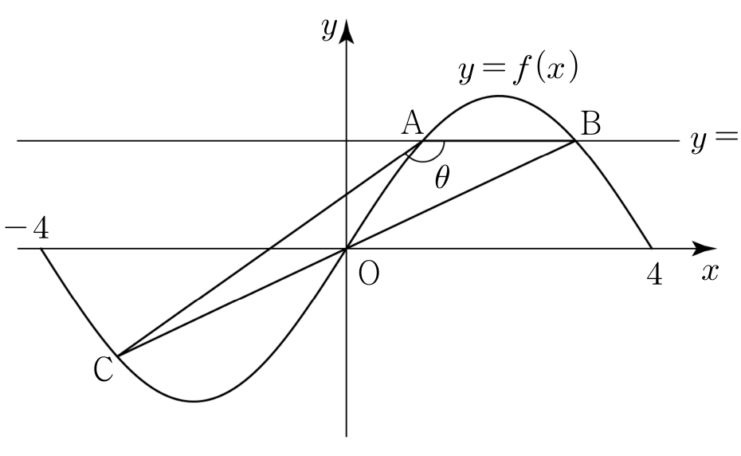
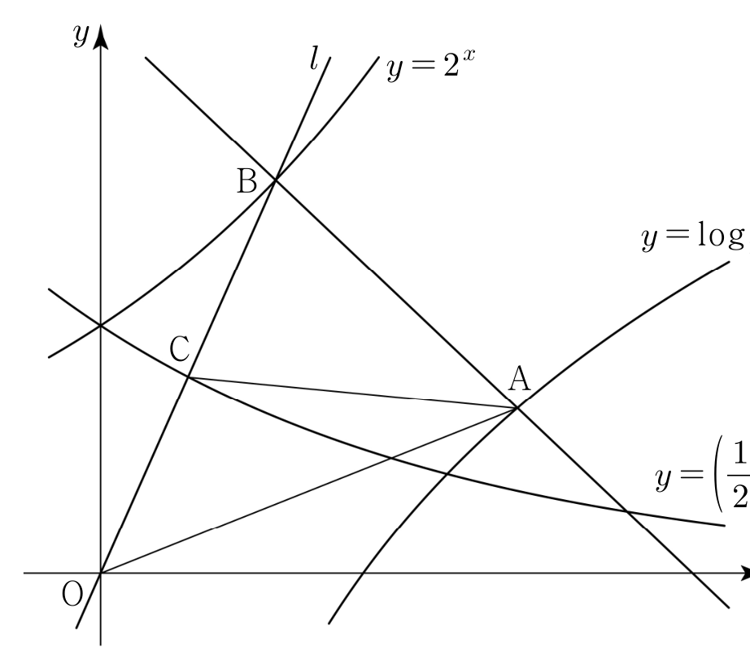

원본 (내부용)중심각의 크기가 \(\frac{\pi}{6}\)이고 호의 길이가 \(\pi\)인 부채꼴의 넓이는? [3점]
① \(\pi\)② \(2\pi\)③ \(3\pi\)④ \(4\pi\)⑤ \(5\pi\)
원본 정답 ③
원본 풀이 (내부용)[출제의도] 일반각과 호도법 이해하기
부채꼴의 반지름의 길이를 \(r\), 중심각의 크기를 \(\theta\)라 하자.
\(
\theta=\frac{\pi}{6}
\)
이므로 부채꼴의 호의 길이는
\(
r\theta=r\times\frac{\pi}{6}=\pi,\qquad r=6
\)
따라서 부채꼴의 넓이는
\(
\frac12r^2\theta=\frac12\times36\times\frac{\pi}{6}=3\pi
\)
생성기 숫자판 1/6 · G2M1-02b#17중심각의 크기가 $\frac{\pi}{6}$이고 호의 길이가 $3\pi$인 부채꼴의 넓이로 옳은 것을 고르세요.
① $25\pi$② $26\pi$③ $27\pi$④ $28\pi$⑤ $29\pi$
정답③ $27\pi$ 반지름의 길이를 $r$이라 하면 $r\times \frac{\pi}{6}=3\pi$이므로 $r=18$ 넓이는 $\frac{1}{2}\times 18\times 3\pi=27\pi$
숫자: 원본 6 → 쌍둥이 6 3 · 같은 수: 6
생성기 숫자판 2/6 · G2M1-02b#17중심각의 크기가 $\frac{\pi}{3}$이고 호의 길이가 $\pi$인 부채꼴의 넓이로 옳은 것을 고르세요.
① $\frac{\pi}{2}$② $\frac{3}{2}\pi$③ $\frac{5}{2}\pi$④ $\frac{7}{2}\pi$⑤ $\frac{9}{2}\pi$
정답② $\frac{3}{2}\pi$ 반지름의 길이를 $r$이라 하면 $r\times \frac{\pi}{3}=\pi$이므로 $r=3$ 넓이는 $\frac{1}{2}\times 3\times \pi=\frac{3}{2}\pi$
숫자: 원본 6 → 쌍둥이 3
생성기 숫자판 3/6 · G2M1-02b#17중심각의 크기가 $\frac{\pi}{4}$이고 호의 길이가 $2\pi$인 부채꼴의 넓이로 옳은 것을 고르세요.
① $6\pi$② $7\pi$③ $8\pi$④ $9\pi$⑤ $10\pi$
정답③ $8\pi$ 반지름의 길이를 $r$이라 하면 $r\times \frac{\pi}{4}=2\pi$이므로 $r=8$ 넓이는 $\frac{1}{2}\times 8\times 2\pi=8\pi$
숫자: 원본 6 → 쌍둥이 4 2
생성기 숫자판 4/6 · G2M1-02b#17중심각의 크기가 $\frac{\pi}{2}$이고 호의 길이가 $2\pi$인 부채꼴의 넓이로 옳은 것을 고르세요.
① $2\pi$② $3\pi$③ $4\pi$④ $5\pi$⑤ $6\pi$
정답③ $4\pi$ 반지름의 길이를 $r$이라 하면 $r\times \frac{\pi}{2}=2\pi$이므로 $r=4$ 넓이는 $\frac{1}{2}\times 4\times 2\pi=4\pi$
숫자: 원본 6 → 쌍둥이 2 2
생성기 숫자판 5/6 · G2M1-02b#17중심각의 크기가 $\frac{\pi}{3}$이고 호의 길이가 $3\pi$인 부채꼴의 넓이로 옳은 것을 고르세요.
① $\frac{23}{2}\pi$② $\frac{25}{2}\pi$③ $\frac{27}{2}\pi$④ $\frac{29}{2}\pi$⑤ $\frac{31}{2}\pi$
정답③ $\frac{27}{2}\pi$ 반지름의 길이를 $r$이라 하면 $r\times \frac{\pi}{3}=3\pi$이므로 $r=9$ 넓이는 $\frac{1}{2}\times 9\times 3\pi=\frac{27}{2}\pi$
숫자: 원본 6 → 쌍둥이 3 3
생성기 숫자판 6/6 · G2M1-02b#17중심각의 크기가 $\frac{2}{3}\pi$이고 호의 길이가 $2\pi$인 부채꼴의 넓이로 옳은 것을 고르세요.
① $\pi$② $2\pi$③ $3\pi$④ $4\pi$⑤ $5\pi$
정답③ $3\pi$ 반지름의 길이를 $r$이라 하면 $r\times \frac{2}{3}\pi=2\pi$이므로 $r=3$ 넓이는 $\frac{1}{2}\times 3\times 2\pi=3\pi$
숫자: 원본 6 → 쌍둥이 2 3 2
8. 2022년 9월 8번 · 3점 · 수학Ⅰ 지수·로그 · G2M10-03#0
원본 (내부용)함수 \(y=\log_3(2x+1)\)의 역함수의 그래프가 점 \((4,a)\)를 지날 때, \(a\)의 값은? [3점]
① 40② 42③ 44④ 46⑤ 48
원본 정답 ①
원본 풀이 (내부용)[출제의도] 로그함수의 그래프 이해하기
함수 \(y=\log_3(2x+1)\)의 그래프가 점 \((a,4)\)를 지나므로
\(
4=\log_3(2a+1),\qquad 2a+1=3^4
\)
따라서 \(a=40\).
생성기 숫자판 1/6 · G2M10-03#0함수 $y=\log_{7}\left(5x+12\right)$의 역함수의 그래프가 점 $\left(5,\ a\right)$를 지날 때, $a$의 값으로 옳은 것을 고르세요.
원본 (내부용)\(\overline{AB}=3,\ \overline{BC}=6\)인 삼각형 \(ABC\)가 있다. \(\angle ABC=\theta\)에 대하여 \(\sin\theta=\frac{2\sqrt{14}}{9}\)일 때, 선분 \(AC\)의 길이는? (단, \(0<\theta<\frac{\pi}{2}\)) [3점]
① 4② \(\frac{13}{3}\)③ \(\frac{14}{3}\)④ 5⑤ \(\frac{16}{3}\)
원본 정답 ④
원본 풀이 (내부용)[출제의도] 코사인법칙 이해하기
\(
\sin\theta=\frac{2\sqrt{14}}9
\)
이므로
\(
\cos^2\theta
=1-\left(\frac{2\sqrt{14}}9\right)^2
=1-\frac{56}{81}
=\frac{25}{81}
\)
\(0<\theta<\frac{\pi}{2}\)에서 \(\cos\theta=\frac59\).
코사인법칙에 의하여
\(
\overline{AC}^{\,2}
=3^2+6^2-2\times3\times6\times\frac59=25
\)
따라서 선분 \(AC\)의 길이는 \(5\).
생성기 숫자판 1/5 · G2M10-02#7$\overline{\mathrm{AB}}=6,\ \overline{\mathrm{BC}}=6$인 삼각형 $\mathrm{ABC}$가 있습니다. $\angle\mathrm{ABC}=\theta$에 대하여 $\sin\theta=\frac{\sqrt{3}}{2}$일 때, 선분 $\mathrm{AC}$의 길이로 옳은 것을 고르세요. (단, $0<\theta<\frac{\pi}{2}$)
① $6$② $\frac{19}{3}$③ $\frac{20}{3}$④ $7$⑤ $\frac{22}{3}$
정답① $6$ $0<\theta<\frac{\pi}{2}$이므로 $\cos\theta=\sqrt{1-\sin^{2}\theta}=\frac{1}{2}$ 코사인법칙에 의하여 $\overline{\mathrm{AC}}^{2}=6^{2}+6^{2}-2\times 6\times 6\times \frac{1}{2}=36$ 따라서 $\overline{\mathrm{AC}}=6$
생성기 숫자판 2/5 · G2M10-02#7$\overline{\mathrm{AB}}=5,\ \overline{\mathrm{BC}}=7$인 삼각형 $\mathrm{ABC}$가 있습니다. $\angle\mathrm{ABC}=\theta$에 대하여 $\sin\theta=\frac{\sqrt{51}}{10}$일 때, 선분 $\mathrm{AC}$의 길이로 옳은 것을 고르세요. (단, $0<\theta<\frac{\pi}{2}$)
① $\frac{14}{3}$② $5$③ $\frac{16}{3}$④ $\frac{17}{3}$⑤ $6$
정답② $5$ $0<\theta<\frac{\pi}{2}$이므로 $\cos\theta=\sqrt{1-\sin^{2}\theta}=\frac{7}{10}$ 코사인법칙에 의하여 $\overline{\mathrm{AC}}^{2}=5^{2}+7^{2}-2\times 5\times 7\times \frac{7}{10}=25$ 따라서 $\overline{\mathrm{AC}}=5$
생성기 숫자판 3/5 · G2M10-02#7$\overline{\mathrm{AB}}=4,\ \overline{\mathrm{BC}}=5$인 삼각형 $\mathrm{ABC}$가 있습니다. $\angle\mathrm{ABC}=\theta$에 대하여 $\sin\theta=\frac{\sqrt{39}}{8}$일 때, 선분 $\mathrm{AC}$의 길이로 옳은 것을 고르세요. (단, $0<\theta<\frac{\pi}{2}$)
① $\frac{10}{3}$② $\frac{11}{3}$③ $4$④ $\frac{13}{3}$⑤ $\frac{14}{3}$
정답③ $4$ $0<\theta<\frac{\pi}{2}$이므로 $\cos\theta=\sqrt{1-\sin^{2}\theta}=\frac{5}{8}$ 코사인법칙에 의하여 $\overline{\mathrm{AC}}^{2}=4^{2}+5^{2}-2\times 4\times 5\times \frac{5}{8}=16$ 따라서 $\overline{\mathrm{AC}}=4$
생성기 숫자판 4/5 · G2M10-02#7$\overline{\mathrm{AB}}=6,\ \overline{\mathrm{BC}}=6$인 삼각형 $\mathrm{ABC}$가 있습니다. $\angle\mathrm{ABC}=\theta$에 대하여 $\sin\theta=\frac{7\sqrt{95}}{72}$일 때, 선분 $\mathrm{AC}$의 길이로 옳은 것을 고르세요. (단, $0<\theta<\frac{\pi}{2}$)
① $6$② $\frac{19}{3}$③ $\frac{20}{3}$④ $7$⑤ $\frac{22}{3}$
정답④ $7$ $0<\theta<\frac{\pi}{2}$이므로 $\cos\theta=\sqrt{1-\sin^{2}\theta}=\frac{23}{72}$ 코사인법칙에 의하여 $\overline{\mathrm{AC}}^{2}=6^{2}+6^{2}-2\times 6\times 6\times \frac{23}{72}=49$ 따라서 $\overline{\mathrm{AC}}=7$
생성기 숫자판 5/5 · G2M10-02#7$\overline{\mathrm{AB}}=3,\ \overline{\mathrm{BC}}=6$인 삼각형 $\mathrm{ABC}$가 있습니다. $\angle\mathrm{ABC}=\theta$에 대하여 $\sin\theta=\frac{\sqrt{15}}{4}$일 때, 선분 $\mathrm{AC}$의 길이로 옳은 것을 고르세요. (단, $0<\theta<\frac{\pi}{2}$)
① $\frac{16}{3}$② $\frac{17}{3}$③ $6$④ $\frac{19}{3}$⑤ $\frac{20}{3}$
정답③ $6$ $0<\theta<\frac{\pi}{2}$이므로 $\cos\theta=\sqrt{1-\sin^{2}\theta}=\frac{1}{4}$ 코사인법칙에 의하여 $\overline{\mathrm{AC}}^{2}=3^{2}+6^{2}-2\times 3\times 6\times \frac{1}{4}=36$ 따라서 $\overline{\mathrm{AC}}=6$
원본 (내부용)그림과 같이 곡선 \(y=\log_4 x\) 위의 점 \(A\)와 곡선 \(y=-\log_4(x+1)\) 위의 점 \(B\)가 있다. 점 \(A\)의 \(y\)좌표가 1이고, \(x\)축이 삼각형 \(OAB\)의 넓이를 이등분할 때, 선분 \(OB\)의 길이는? (단, \(O\)는 원점이다.) [3점]
① \(\sqrt{6}\)② \(2\sqrt{2}\)③ \(\sqrt{10}\)④ \(2\sqrt{3}\)⑤ \(\sqrt{14}\)
원본 정답 ③
원본 풀이 (내부용)[출제의도] 로그함수의 그래프 이해하기
곡선 \(y=\log_4x\) 위의 점 \(A\)의 \(y\)좌표가 1이므로 점 \(A\)의 좌표는 \((4,1)\).
선분 \(AB\)와 \(x\)축이 만나는 점을 \(C\)라 하면, \(x\)축이 삼각형 \(OAB\)의 넓이를 이등분하므로 점 \(C\)는 선분 \(AB\)의 중점이다.
점 \(B\)의 \(y\)좌표는 \(-1\)이고, 점 \(B\)는 곡선 \(y=-\log_4(x+1)\) 위의 점이므로 점 \(B\)의 좌표는 \((3,-1)\).
따라서
\(
\overline{OB}=\sqrt{(3-0)^2+(-1-0)^2}=\sqrt{10}
\)
생성기 숫자판 1/6 · G2M10-03#6곡선 $y=\log_{7}x$ 위의 점 $\mathrm{A}$와 곡선 $y=-\log_{7}\left(x+1\right)$ 위의 점 $\mathrm{B}$가 있습니다. 점 $\mathrm{A}$의 $y$좌표가 $1$이고, $x$축이 삼각형 $\mathrm{OAB}$의 넓이를 이등분할 때, 선분 $\mathrm{OB}$의 길이로 옳은 것을 고르세요. (단, $\mathrm{O}$는 원점입니다.)
① $\sqrt{39}$② $\sqrt{37}$③ $\sqrt{35}$④ $\sqrt{36}$⑤ $\sqrt{38}$
생성기 숫자판 2/6 · G2M10-03#6곡선 $y=\log_{8}x$ 위의 점 $\mathrm{A}$와 곡선 $y=-\log_{8}\left(x+1\right)$ 위의 점 $\mathrm{B}$가 있습니다. 점 $\mathrm{A}$의 $y$좌표가 $1$이고, $x$축이 삼각형 $\mathrm{OAB}$의 넓이를 이등분할 때, 선분 $\mathrm{OB}$의 길이로 옳은 것을 고르세요. (단, $\mathrm{O}$는 원점입니다.)
① $\sqrt{48}$② $\sqrt{51}$③ $\sqrt{52}$④ $\sqrt{50}$⑤ $\sqrt{49}$
생성기 숫자판 3/6 · G2M10-03#6곡선 $y=\log_{2}x$ 위의 점 $\mathrm{A}$와 곡선 $y=-\log_{2}\left(x+1\right)$ 위의 점 $\mathrm{B}$가 있습니다. 점 $\mathrm{A}$의 $y$좌표가 $3$이고, $x$축이 삼각형 $\mathrm{OAB}$의 넓이를 이등분할 때, 선분 $\mathrm{OB}$의 길이로 옳은 것을 고르세요. (단, $\mathrm{O}$는 원점입니다.)
① $\sqrt{59}$② $\sqrt{56}$③ $\sqrt{57}$④ $\sqrt{58}$⑤ $\sqrt{60}$
생성기 숫자판 4/6 · G2M10-03#6곡선 $y=\log_{3}x$ 위의 점 $\mathrm{A}$와 곡선 $y=-\log_{3}\left(x+1\right)$ 위의 점 $\mathrm{B}$가 있습니다. 점 $\mathrm{A}$의 $y$좌표가 $1$이고, $x$축이 삼각형 $\mathrm{OAB}$의 넓이를 이등분할 때, 선분 $\mathrm{OB}$의 길이로 옳은 것을 고르세요. (단, $\mathrm{O}$는 원점입니다.)
① $\sqrt{7}$② $\sqrt{4}$③ $\sqrt{5}$④ $\sqrt{6}$⑤ $\sqrt{3}$
생성기 숫자판 5/6 · G2M10-03#6곡선 $y=\log_{6}x$ 위의 점 $\mathrm{A}$와 곡선 $y=-\log_{6}\left(x+1\right)$ 위의 점 $\mathrm{B}$가 있습니다. 점 $\mathrm{A}$의 $y$좌표가 $1$이고, $x$축이 삼각형 $\mathrm{OAB}$의 넓이를 이등분할 때, 선분 $\mathrm{OB}$의 길이로 옳은 것을 고르세요. (단, $\mathrm{O}$는 원점입니다.)
① $\sqrt{27}$② $\sqrt{26}$③ $\sqrt{28}$④ $\sqrt{24}$⑤ $\sqrt{25}$
생성기 숫자판 6/6 · G2M10-03#6곡선 $y=\log_{5}x$ 위의 점 $\mathrm{A}$와 곡선 $y=-\log_{5}\left(x+1\right)$ 위의 점 $\mathrm{B}$가 있습니다. 점 $\mathrm{A}$의 $y$좌표가 $1$이고, $x$축이 삼각형 $\mathrm{OAB}$의 넓이를 이등분할 때, 선분 $\mathrm{OB}$의 길이로 옳은 것을 고르세요. (단, $\mathrm{O}$는 원점입니다.)
① $\sqrt{15}$② $\sqrt{17}$③ $\sqrt{19}$④ $\sqrt{16}$⑤ $\sqrt{18}$
원본 (내부용)모든 항이 양수인 수열 \(\{a_n\}\)이 모든 자연수 \(n\)에 대하여 \( \log_2\frac{a_{n+1}}{a_n}=\frac{1}{2} \) 를 만족시킨다. 수열 \(\{a_n\}\)의 첫째항부터 제 \(n\)항까지의 합을 \(S_n\)이라 할 때, \(\frac{S_{12}}{S_6}\)의 값은? [3점]
① \(\frac{17}{2}\)② 9③ \(\frac{19}{2}\)④ 10⑤ \(\frac{21}{2}\)
원본 정답 ②
원본 풀이 (내부용)[출제의도] 등비수열을 활용하여 문제 해결하기
\(
\log_2\frac{a_{n+1}}{a_n}=\frac12,\qquad
\frac{a_{n+1}}{a_n}=\sqrt2,\qquad a_{n+1}=\sqrt2\,a_n
\)
\(a_1=a\)라 하면 수열 \(\{a_n\}\)은 첫째항이 \(a\)이고 공비가 \(\sqrt2\)인 등비수열이므로
\(
S_n=\frac{a\{(\sqrt2)^n-1\}}{\sqrt2-1}
\)
따라서
\(
\frac{S_{12}}{S_6}
=\frac{(\sqrt2)^{12}-1}{(\sqrt2)^6-1}
=\frac{2^6-1}{2^3-1}=9
\)
생성기 숫자판 1/5 · G2M1-05b#1모든 항이 양수인 수열 $\left\{a_{n}\right\}$이 모든 자연수 $n$에 대하여 $\log_{2}\frac{a_{n+1}}{a_{n}}=\frac{1}{3}$을 만족시킵니다. 수열 $\left\{a_{n}\right\}$의 첫째항부터 제$n$항까지의 합을 $S_{n}$이라 할 때, $\frac{S_{12}}{S_{6}}$의 값으로 옳은 것을 고르세요.
원본 (내부용)첫째항이 \(\frac{1}{2}\)인 수열 \(\{a_n\}\)이 모든 자연수 \(n\)에 대하여 \( a_{n+1}=-\frac{1}{a_n-1} \) 을 만족시킨다. 수열 \(\{a_n\}\)의 첫째항부터 제 \(n\)항까지의 합을 \(S_n\)이라 할 때, \(S_m=11\)을 만족시키는 자연수 \(m\)의 값은? [3점]
생성기 숫자판 1/6 · G2M10-02#3첫째항이 $-1$인 수열 $\left\{a_{n}\right\}$이 모든 자연수 $n$에 대하여 $a_{n+1}=-\frac{1}{a_{n}-1}$을 만족시킵니다. 수열 $\left\{a_{n}\right\}$의 첫째항부터 제$n$항까지의 합을 $S_{n}$이라 할 때, $S_{m}=10$을 만족시키는 자연수 $m$의 값으로 옳은 것을 고르세요.
① $22$② $23$③ $24$④ $25$⑤ $26$
정답② $23$ $a_{1}=-1$, $a_{2}=-\frac{1}{-1-1}=\frac{1}{2}$, $a_{3}=-\frac{1}{\frac{1}{2}-1}=2$, $a_{4}=-\frac{1}{2-1}=-1$ 수열 $\left\{a_{n}\right\}$은 $3$개의 수가 이 순서대로 반복되고 $a_{1}+a_{2}+a_{3}=\frac{3}{2}$ $S_{21}=7\times \frac{3}{2}=\frac{21}{2}$이고 $S_{23}=S_{21}+a_{22}+a_{23}=10$ 따라서 $m=23$
숫자: 원본 1 2 1 1 1 11 → 쌍둥이 1 1 1 1 10 · 같은 수: 1
생성기 숫자판 2/6 · G2M10-02#3첫째항이 $\frac{1}{2}$인 수열 $\left\{a_{n}\right\}$이 모든 자연수 $n$에 대하여 $a_{n+1}=-\frac{1}{a_{n}-1}$을 만족시킵니다. 수열 $\left\{a_{n}\right\}$의 첫째항부터 제$n$항까지의 합을 $S_{n}$이라 할 때, $S_{m}=10$을 만족시키는 자연수 $m$의 값으로 옳은 것을 고르세요.
① $13$② $14$③ $15$④ $16$⑤ $17$
정답⑤ $17$ $a_{1}=\frac{1}{2}$, $a_{2}=-\frac{1}{\frac{1}{2}-1}=2$, $a_{3}=-\frac{1}{2-1}=-1$, $a_{4}=-\frac{1}{-1-1}=\frac{1}{2}$ 수열 $\left\{a_{n}\right\}$은 $3$개의 수가 이 순서대로 반복되고 $a_{1}+a_{2}+a_{3}=\frac{3}{2}$ $S_{15}=5\times \frac{3}{2}=\frac{15}{2}$이고 $S_{17}=S_{15}+a_{16}+a_{17}=10$ 따라서 $m=17$
생성기 숫자판 3/6 · G2M10-02#3첫째항이 $2$인 수열 $\left\{a_{n}\right\}$이 모든 자연수 $n$에 대하여 $a_{n+1}=-\frac{1}{a_{n}-1}$을 만족시킵니다. 수열 $\left\{a_{n}\right\}$의 첫째항부터 제$n$항까지의 합을 $S_{n}$이라 할 때, $S_{m}=11$을 만족시키는 자연수 $m$의 값으로 옳은 것을 고르세요.
① $19$② $20$③ $21$④ $22$⑤ $23$
정답① $19$ $a_{1}=2$, $a_{2}=-\frac{1}{2-1}=-1$, $a_{3}=-\frac{1}{-1-1}=\frac{1}{2}$, $a_{4}=-\frac{1}{\frac{1}{2}-1}=2$ 수열 $\left\{a_{n}\right\}$은 $3$개의 수가 이 순서대로 반복되고 $a_{1}+a_{2}+a_{3}=\frac{3}{2}$ $S_{18}=6\times \frac{3}{2}=9$이고 $S_{19}=S_{18}+a_{19}=11$ 따라서 $m=19$
생성기 숫자판 4/6 · G2M10-02#3첫째항이 $2$인 수열 $\left\{a_{n}\right\}$이 모든 자연수 $n$에 대하여 $a_{n+1}=-\frac{1}{a_{n}-1}$을 만족시킵니다. 수열 $\left\{a_{n}\right\}$의 첫째항부터 제$n$항까지의 합을 $S_{n}$이라 할 때, $S_{m}=13$을 만족시키는 자연수 $m$의 값으로 옳은 것을 고르세요.
① $24$② $25$③ $26$④ $27$⑤ $28$
정답③ $26$ $a_{1}=2$, $a_{2}=-\frac{1}{2-1}=-1$, $a_{3}=-\frac{1}{-1-1}=\frac{1}{2}$, $a_{4}=-\frac{1}{\frac{1}{2}-1}=2$ 수열 $\left\{a_{n}\right\}$은 $3$개의 수가 이 순서대로 반복되고 $a_{1}+a_{2}+a_{3}=\frac{3}{2}$ $S_{24}=8\times \frac{3}{2}=12$이고 $S_{26}=S_{24}+a_{25}+a_{26}=13$ 따라서 $m=26$
숫자: 원본 1 2 1 1 1 11 → 쌍둥이 2 1 1 1 13 · 같은 수: 1 2
생성기 숫자판 5/6 · G2M10-02#3첫째항이 $\frac{2}{3}$인 수열 $\left\{a_{n}\right\}$이 모든 자연수 $n$에 대하여 $a_{n+1}=-\frac{1}{a_{n}-1}$을 만족시킵니다. 수열 $\left\{a_{n}\right\}$의 첫째항부터 제$n$항까지의 합을 $S_{n}$이라 할 때, $S_{m}=26$을 만족시키는 자연수 $m$의 값으로 옳은 것을 고르세요.
① $24$② $25$③ $26$④ $27$⑤ $28$
정답② $25$ $a_{1}=\frac{2}{3}$, $a_{2}=-\frac{1}{\frac{2}{3}-1}=3$, $a_{3}=-\frac{1}{3-1}=-\frac{1}{2}$, $a_{4}=-\frac{1}{-\frac{1}{2}-1}=\frac{2}{3}$ 수열 $\left\{a_{n}\right\}$은 $3$개의 수가 이 순서대로 반복되고 $a_{1}+a_{2}+a_{3}=\frac{19}{6}$ $S_{24}=8\times \frac{19}{6}=\frac{76}{3}$이고 $S_{25}=S_{24}+a_{25}=26$ 따라서 $m=25$
생성기 숫자판 6/6 · G2M10-02#3첫째항이 $2$인 수열 $\left\{a_{n}\right\}$이 모든 자연수 $n$에 대하여 $a_{n+1}=-\frac{1}{a_{n}-1}$을 만족시킵니다. 수열 $\left\{a_{n}\right\}$의 첫째항부터 제$n$항까지의 합을 $S_{n}$이라 할 때, $S_{m}=14$를 만족시키는 자연수 $m$의 값으로 옳은 것을 고르세요.
① $22$② $23$③ $24$④ $25$⑤ $26$
정답④ $25$ $a_{1}=2$, $a_{2}=-\frac{1}{2-1}=-1$, $a_{3}=-\frac{1}{-1-1}=\frac{1}{2}$, $a_{4}=-\frac{1}{\frac{1}{2}-1}=2$ 수열 $\left\{a_{n}\right\}$은 $3$개의 수가 이 순서대로 반복되고 $a_{1}+a_{2}+a_{3}=\frac{3}{2}$ $S_{24}=8\times \frac{3}{2}=12$이고 $S_{25}=S_{24}+a_{25}=14$ 따라서 $m=25$
숫자: 원본 1 2 1 1 1 11 → 쌍둥이 2 1 1 1 14 · 같은 수: 1 2
14. 2022년 9월 14번 · 4점 · 수학Ⅰ 삼각함수 · 4점 쌍둥이
원본 (내부용)그림과 같이 중심이 \(O\)이고 반지름의 길이가 6인 부채꼴 \(OAB\)가 있다. \(\overline{AB}=8\sqrt{2}\)이고 부채꼴 \(OAB\)의 호 \(AB\) 위의 한 점 \(P\)에 대하여 \(\angle BPA>90^\circ,\ \overline{AP}:\overline{BP}=3:1\)일 때, 선분 \(BP\)의 길이는? [4점]
① \(\frac{2\sqrt{6}}{3}\)② \(\frac{5\sqrt{6}}{6}\)③ \(\sqrt{6}\)④ \(\frac{7\sqrt{6}}{6}\)⑤ \(\frac{4\sqrt{6}}{3}\)
원본 정답 ⑤
원본 풀이 (내부용)[출제의도] 사인법칙과 코사인법칙을 활용하여 문제 해결하기
삼각형 \(APB\)의 외접원의 반지름의 길이 \(R\)은 부채꼴 \(OAB\)의 반지름의 길이와 같으므로 \(R=6\).
\(\angle BPA=\theta\;(\theta>\frac{\pi}{2})\)라 할 때, 삼각형 \(APB\)에서 사인법칙에 의하여
\(
\sin\theta=\frac{8\sqrt2}{2\times6}=\frac{2\sqrt2}{3}
\)
\(
\cos^2\theta=1-\left(\frac{2\sqrt2}{3}\right)^2=\frac19
\)
\(\theta>\frac{\pi}{2}\)일 때 \(\cos\theta<0\)이므로 \(\cos\theta=-\frac13\).
\(\overline{BP}=k\)라 하면 \(\overline{AP}:\overline{BP}=3:1\)이므로 \(\overline{AP}=3k\).
삼각형 \(APB\)에서 코사인법칙에 의하여
\(
(3k)^2+k^2-2\times3k\times k\times\left(-\frac13\right)=(8\sqrt2)^2
\)
\(
9k^2+k^2+2k^2=128,\qquad k^2=\frac{32}{3}
\)
따라서 선분 \(BP\)의 길이는 \(\frac{4\sqrt6}{3}\).
쌍둥이 1/5 · 4점 쌍둥이중심이 $O$이고 반지름의 길이가 $5$인 부채꼴 $OAB$가 있습니다. $\overline{AB}=8$이고 부채꼴 $OAB$의 호 $AB$ 위의 한 점 $P$에 대하여 $\angle BPA>90^{\circ}$, $\overline{AP}:\overline{BP}=5:1$일 때, 선분 $BP$의 길이로 옳은 것을 고르세요.
① $\sqrt{2}$② $\frac{7\sqrt{2}}{6}$③ $\frac{4\sqrt{2}}{3}$④ $\frac{3\sqrt{2}}{2}$⑤ $\frac{5\sqrt{2}}{3}$
정답① $\sqrt{2}$ $\angle AOB=\theta$라 하면 $\overline{AB}=2\times5\times\sin\frac{\theta}{2}$이므로 $\sin\frac{\theta}{2}=\frac{4}{5}$, $\cos\frac{\theta}{2}=\frac{3}{5}$ 점 $P$는 호 $AB$ 위에 있으므로 $\angle APB=\pi-\frac{\theta}{2}$, $\cos(\angle APB)=-\frac{3}{5}$ $\overline{BP}=x$라 하면 코사인법칙에서 $64=25x^{2}+x^{2}+2\times5x\times x\times\frac{3}{5}=32x^{2}$ $x^{2}=2$이므로 $\overline{BP}=\sqrt{2}$
쌍둥이 2/5 · 4점 쌍둥이중심이 $O$이고 반지름의 길이가 $7$인 부채꼴 $OAB$가 있습니다. $\overline{AB}=7\sqrt{3}$이고 부채꼴 $OAB$의 호 $AB$ 위의 한 점 $P$에 대하여 $\angle BPA>90^{\circ}$, $\overline{AP}:\overline{BP}=2:1$일 때, 선분 $BP$의 길이로 옳은 것을 고르세요.
① $\frac{\sqrt{21}}{3}$② $\frac{\sqrt{21}}{2}$③ $\frac{2\sqrt{21}}{3}$④ $\frac{5\sqrt{21}}{6}$⑤ $\sqrt{21}$
정답⑤ $\sqrt{21}$ $\angle AOB=\theta$라 하면 $\overline{AB}=2\times7\times\sin\frac{\theta}{2}$이므로 $\sin\frac{\theta}{2}=\frac{\sqrt{3}}{2}$, $\cos\frac{\theta}{2}=\frac{1}{2}$ 점 $P$는 호 $AB$ 위에 있으므로 $\angle APB=\pi-\frac{\theta}{2}$, $\cos(\angle APB)=-\frac{1}{2}$ $\overline{BP}=x$라 하면 코사인법칙에서 $147=4x^{2}+x^{2}+2\times2x\times x\times\frac{1}{2}=7x^{2}$ $x^{2}=21$이므로 $\overline{BP}=\sqrt{21}$
쌍둥이 3/5 · 4점 쌍둥이중심이 $O$이고 반지름의 길이가 $4$인 부채꼴 $OAB$가 있습니다. $\overline{AB}=2\sqrt{15}$이고 부채꼴 $OAB$의 호 $AB$ 위의 한 점 $P$에 대하여 $\angle BPA>90^{\circ}$, $\overline{AP}:\overline{BP}=2:1$일 때, 선분 $BP$의 길이로 옳은 것을 고르세요.
① $\frac{5\sqrt{10}}{6}$② $\sqrt{10}$③ $\frac{7\sqrt{10}}{6}$④ $\frac{4\sqrt{10}}{3}$⑤ $\frac{3\sqrt{10}}{2}$
정답② $\sqrt{10}$ $\angle AOB=\theta$라 하면 $\overline{AB}=2\times4\times\sin\frac{\theta}{2}$이므로 $\sin\frac{\theta}{2}=\frac{\sqrt{15}}{4}$, $\cos\frac{\theta}{2}=\frac{1}{4}$ 점 $P$는 호 $AB$ 위에 있으므로 $\angle APB=\pi-\frac{\theta}{2}$, $\cos(\angle APB)=-\frac{1}{4}$ $\overline{BP}=x$라 하면 코사인법칙에서 $60=4x^{2}+x^{2}+2\times2x\times x\times\frac{1}{4}=6x^{2}$ $x^{2}=10$이므로 $\overline{BP}=\sqrt{10}$
쌍둥이 5/5 · 4점 쌍둥이첫째항이 양수이고 공차가 $5$인 등차수열 $\{a_n\}$의 첫째항부터 제$n$항까지의 합을 $S_n$이라 합니다. $a_k=24$, $S_{k+2}=129$를 만족시키는 자연수 $k$에 대하여 $a_1$의 값을 구하세요.
① $7$② $9$③ $11$④ $13$⑤ $15$
정답② $9$ 공차를 $d=5$, $a_k=A=24$, $q=2$라 하면 $a_1=A-(k-1)d$이고 $S_{k+q}=\frac{k+q}{2}\{2A+(q+1-k)d\}$이다. 따라서 $(k+2)(63-5k)=258$, 즉 $5k^2-53k+132=0$이다. 근은 $k=4$와 $k=\frac{33}{5}$이므로 자연수 조건에서 $k=4$이다. $a_1=a_4-3\cdot5=24-15=9$로 양수 조건도 만족한다.
숫자: 원본 2 31 10 640 → 쌍둥이 5 24 2 129 1 · 같은 수: 2
16. 2022년 9월 16번 · 4점 · 수학Ⅰ 삼각함수 · 4점 쌍둥이
원본 (내부용)집합 \(\{x\mid -4\le x\le4\}\)에서 정의된 함수 \( f(x)=2\sin\frac{\pi x}{4} \) 가 있다. 그림과 같이 함수 \(y=f(x)\)의 그래프가 직선 \(y=\sqrt{2}\)와 만나는 서로 다른 두 점을 \(A,B\)라 하고, 두 점 \(B,O\)를 지나는 직선이 함수 \(y=f(x)\)의 그래프와 만나는 점 중 \(B\)와 \(O\)가 아닌 점을 \(C\)라 하자. \(\angle BAC=\theta\)라 할 때, \(\sin\theta\)의 값은? (단, 점 \(B\)의 \(x\)좌표는 점 \(A\)의 \(x\)좌표보다 크고, \(O\)는 원점이다.) [4점]

① \(\frac{\sqrt{3}}{3}\)② \(\frac{7\sqrt{3}}{18}\)③ \(\frac{4\sqrt{3}}{9}\)④ \(\frac{\sqrt{3}}{2}\)⑤ \(\frac{5\sqrt{3}}{9}\)
원본 정답 ①
원본 풀이 (내부용)[출제의도] 삼각함수의 그래프 이해하기
방정식
\(
\sin\frac{\pi x}{4}=\frac{\sqrt2}{2}\qquad(-4\le x\le4)
\)
에서
\(
\frac{\pi x}{4}=\frac{\pi}{4}\quad\text{또는}\quad
\frac{\pi x}{4}=\frac{3\pi}{4},\qquad x=1\quad\text{또는}\quad x=3
\)
점 \(A\)의 좌표는 \((1,\sqrt2)\), 점 \(B\)의 좌표는 \((3,\sqrt2)\).
점 \(B\)와 점 \(C\)는 원점에 대하여 서로 대칭이므로 점 \(C\)의 좌표는 \((-3,-\sqrt2)\).
점 \(C\)에서 직선 \(y=\sqrt2\)에 내린 수선의 발을 \(H\)라 하면 점 \(H\)의 좌표는 \((-3,\sqrt2)\).
\(
\angle CAH=\pi-\theta,\quad \sin\theta=\sin(\pi-\theta),
\)
\(
\overline{CH}=2\sqrt2,\qquad
\overline{AC}=\sqrt{(-3-1)^2+(-\sqrt2-\sqrt2)^2}=2\sqrt6
\)
이므로 직각삼각형 \(ACH\)에서
\(
\sin(\pi-\theta)=\frac{\overline{CH}}{\overline{AC}}
=\frac{2\sqrt2}{2\sqrt6}=\frac{\sqrt3}{3}
\)
따라서 \(\sin\theta=\frac{\sqrt3}{3}\).
쌍둥이 1/5 · 4점 쌍둥이집합 $\{x\mid-6\le x\le6\}$에서 정의된 함수 $f(x)=4\sin\frac{\pi x}{6}$가 있습니다. 함수 $y=f(x)$의 그래프가 직선 $y=2$와 만나는 서로 다른 두 점을 $A$, $B$라 하고, 두 점 $B$, $O$를 지나는 직선이 함수 $y=f(x)$의 그래프와 만나는 점 중 $B$와 $O$가 아닌 점을 $C$라 합니다. $\angle BAC=\theta$라 할 때, $\sin\theta$의 값으로 옳은 것을 고르세요. (단, 점 $B$의 $x$좌표는 점 $A$의 $x$좌표보다 크고, $O$는 원점입니다.)
① $\frac{4\sqrt{13}}{39}$② $\frac{5\sqrt{13}}{39}$③ $\frac{2\sqrt{13}}{13}$④ $\frac{7\sqrt{13}}{39}$⑤ $\frac{8\sqrt{13}}{39}$
정답③ $\frac{2\sqrt{13}}{13}$ $4\sin\frac{\pi x}{6}=2$에서 $\sin\frac{\pi x}{6}=\frac{1}{2}$이므로 $A\left(1,\ 2\right)$, $B\left(5,\ 2\right)$ $f(x)$는 원점에 대하여 대칭이므로 직선 $BO$가 그래프와 다시 만나는 점은 $C\left(-5,\ -2\right)$ $\overrightarrow{AB}=\left(4,\ 0\right)$, $\overrightarrow{AC}=\left(-6,\ -4\right)$이므로 $\overline{AC}=2\sqrt{13}$ 삼각형 $ABC$의 넓이는 $\frac{1}{2}\times4\times4=\frac{1}{2}\times\overline{AB}\times\overline{AC}\times\sin\theta$ $\sin\theta=\frac{4}{2\sqrt{13}}=\frac{2\sqrt{13}}{13}$
숫자: 원본 4 4 2 4 2 → 쌍둥이 6 6 4 6 2 · 같은 수: 2 4
쌍둥이 2/5 · 4점 쌍둥이집합 $\{x\mid-6\le x\le6\}$에서 정의된 함수 $f(x)=2\sin\frac{\pi x}{6}$가 있습니다. 함수 $y=f(x)$의 그래프가 직선 $y=\sqrt{3}$과 만나는 서로 다른 두 점을 $A$, $B$라 하고, 두 점 $B$, $O$를 지나는 직선이 함수 $y=f(x)$의 그래프와 만나는 점 중 $B$와 $O$가 아닌 점을 $C$라 합니다. $\angle BAC=\theta$라 할 때, $\sin\theta$의 값으로 옳은 것을 고르세요. (단, 점 $B$의 $x$좌표는 점 $A$의 $x$좌표보다 크고, $O$는 원점입니다.)
① $\frac{1}{4}$② $\frac{1}{3}$③ $\frac{5}{12}$④ $\frac{1}{2}$⑤ $\frac{7}{12}$
정답④ $\frac{1}{2}$ $2\sin\frac{\pi x}{6}=\sqrt{3}$에서 $\sin\frac{\pi x}{6}=\frac{\sqrt{3}}{2}$이므로 $A\left(2,\ \sqrt{3}\right)$, $B\left(4,\ \sqrt{3}\right)$ $f(x)$는 원점에 대하여 대칭이므로 직선 $BO$가 그래프와 다시 만나는 점은 $C\left(-4,\ -\sqrt{3}\right)$ $\overrightarrow{AB}=\left(2,\ 0\right)$, $\overrightarrow{AC}=\left(-6,\ -2\sqrt{3}\right)$이므로 $\overline{AC}=4\sqrt{3}$ 삼각형 $ABC$의 넓이는 $\frac{1}{2}\times2\times2\sqrt{3}=\frac{1}{2}\times\overline{AB}\times\overline{AC}\times\sin\theta$ $\sin\theta=\frac{2\sqrt{3}}{4\sqrt{3}}=\frac{1}{2}$
숫자: 원본 4 4 2 4 2 → 쌍둥이 6 6 2 6 3 · 같은 수: 2
쌍둥이 3/5 · 4점 쌍둥이집합 $\{x\mid-4\le x\le4\}$에서 정의된 함수 $f(x)=6\sin\frac{\pi x}{4}$가 있습니다. 함수 $y=f(x)$의 그래프가 직선 $y=3\sqrt{2}$와 만나는 서로 다른 두 점을 $A$, $B$라 하고, 두 점 $B$, $O$를 지나는 직선이 함수 $y=f(x)$의 그래프와 만나는 점 중 $B$와 $O$가 아닌 점을 $C$라 합니다. $\angle BAC=\theta$라 할 때, $\sin\theta$의 값으로 옳은 것을 고르세요. (단, 점 $B$의 $x$좌표는 점 $A$의 $x$좌표보다 크고, $O$는 원점입니다.)
① $\frac{\sqrt{11}}{11}$② $\frac{3\sqrt{11}}{22}$③ $\frac{2\sqrt{11}}{11}$④ $\frac{5\sqrt{11}}{22}$⑤ $\frac{3\sqrt{11}}{11}$
정답⑤ $\frac{3\sqrt{11}}{11}$ $6\sin\frac{\pi x}{4}=3\sqrt{2}$에서 $\sin\frac{\pi x}{4}=\frac{\sqrt{2}}{2}$이므로 $A\left(1,\ 3\sqrt{2}\right)$, $B\left(3,\ 3\sqrt{2}\right)$ $f(x)$는 원점에 대하여 대칭이므로 직선 $BO$가 그래프와 다시 만나는 점은 $C\left(-3,\ -3\sqrt{2}\right)$ $\overrightarrow{AB}=\left(2,\ 0\right)$, $\overrightarrow{AC}=\left(-4,\ -6\sqrt{2}\right)$이므로 $\overline{AC}=2\sqrt{22}$ 삼각형 $ABC$의 넓이는 $\frac{1}{2}\times2\times6\sqrt{2}=\frac{1}{2}\times\overline{AB}\times\overline{AC}\times\sin\theta$ $\sin\theta=\frac{6\sqrt{2}}{2\sqrt{22}}=\frac{3\sqrt{11}}{11}$
숫자: 원본 4 4 2 4 2 → 쌍둥이 4 4 6 4 3 2 · 같은 수: 2 4
쌍둥이 4/5 · 4점 쌍둥이집합 $\{x\mid -10\le x\le 10\}$에서 $f(x)=5\sin(\pi x/10)$라 하자. 그래프와 직선 $y=3$의 두 교점을 $A,B$라 하고 $x_B>x_A$라 한다. 직선 $BO$가 그래프와 다시 만나는 점을 $C$라 할 때, $\sin\angle ABC$의 값을 고르시오. ($O$는 원점.)
① $\frac{3}{\sqrt{34}}$② $\frac12$③ $\frac1{\sqrt5}$④ $\frac2{\sqrt{13}}$⑤ $\frac5{\sqrt{34}}$
정답① $\frac{3}{\sqrt{34}}$ 두 교점의 $x$좌표를 $u$와 $10-u$라 쓰면 $A=(u,3)$, $B=(10-u,3)$이다. 함수는 원점 대칭이므로 $C=(-(10-u),-3)$이고 $BC=\sqrt{136}$이다. $AB=10-2u$이고 삼각형 $ABC$의 넓이는 밑변 $AB$와 높이 $6$을 이용하여 $3(10-2u)$이다. 따라서 $\sin\angle ABC=2[ABC]/(AB\cdot BC)=6/\sqrt{136}=3/\sqrt{34}$.
숫자: 원본 4 4 2 4 2 → 쌍둥이 10 10 5 10 3
쌍둥이 5/5 · 4점 쌍둥이집합 $\{x\mid -8\le x\le 8\}$에서 $f(x)=4\sin(\pi x/8)$라 하자. 그래프와 직선 $y=2$의 두 교점을 $A,B$라 하고 $x_B>x_A$라 한다. 직선 $BO$가 그래프와 다시 만나는 점을 $C$라 할 때, $\sin\angle ABC$의 값을 고르시오. ($O$는 원점.)
① $\frac{1}{\sqrt{5}}$② $\frac12$③ $\frac3{\sqrt{34}}$④ $\frac2{\sqrt{13}}$⑤ $\frac2{\sqrt5}$
정답① $\frac{1}{\sqrt{5}}$ 두 교점의 $x$좌표를 $u$와 $8-u$라 쓰면 $A=(u,2)$, $B=(8-u,2)$이다. 원점 대칭으로 $C=(-(8-u),-2)$이고 $BC=\sqrt{80}$이다. $AB=8-2u$이고 삼각형 $ABC$의 넓이는 밑변 $AB$와 높이 $4$를 이용하여 $2(8-2u)$이다. 따라서 $\sin\angle ABC=2[ABC]/(AB\cdot BC)=4/\sqrt{80}=1/\sqrt{5}$.
숫자: 원본 4 4 2 4 2 → 쌍둥이 8 8 4 8 2 · 같은 수: 2 4
17. 2022년 9월 17번 · 4점 · 수학Ⅰ 수열 · 4점 쌍둥이
원본 (내부용)실수 \(a\ (a>1)\)과 자연수 \(n\)에 대하여 직선 \(x=n\)이 두 함수 \( y=3a^x,\qquad y=3a^{x-1} \) 의 그래프와 만나는 점을 각각 \(P_n,Q_n\)이라 하자. 선분 \(P_nQ_n\)의 길이를 \(l_n\), 사다리꼴 \(P_nQ_nQ_{n+2}P_{n+2}\)의 넓이를 \(S_n\)이라 하자. 두 실수 \(L,S\)에 대하여 \( \sum_{k=1}^{20}l_k=L,\qquad \sum_{k=1}^{5}S_{4k-3}=S \) 일 때, \(\frac{S}{L}=\frac{2}{5}\)를 만족시키는 \(a\)의 값을 구하는 과정이다. 두 점 \(P_n,Q_n\)의 좌표는 각각 \((n,3a^n),(n,3a^{n-1})\)이다. 선분 \(P_nQ_n\)의 길이 \(l_n\)은 \( l_n=3(a-1)\times a^{n-1} \) 이므로 \( L=\sum_{k=1}^{20}l_k=3\times\boxed{(가)} \) 이다. 사다리꼴 \(P_nQ_nQ_{n+2}P_{n+2}\)의 넓이 \(S_n\)은 \( S_n=3(a-1)\times(a^{n-1}+a^{n+1}) \) 이므로 \( \begin{aligned} S&=\sum_{k=1}^{5}S_{4k-3}\\ &=S_1+S_5+S_9+S_{13}+S_{17}\\ &=\frac{3}{\boxed{(나)}}\times\boxed{(가)} \end{aligned} \) 이다. 따라서 \( \frac{S}{L} =\frac{\frac{3}{\boxed{(나)}}\times\boxed{(가)}}{3\times\boxed{(가)}} =\frac{1}{\boxed{(나)}}=\frac{2}{5} \) 이므로 \(a=\boxed{(다)}\)이다. 위의 (가), (나)에 알맞은 식을 각각 \(f(a),g(a)\)라 하고, (다)에 알맞은 수를 \(p\)라 할 때, \( \frac{f(\sqrt{2})}{g(20p)} \) 의 값은? [4점]
① 24② 27③ 30④ 33⑤ 36
원본 정답 ④
원본 풀이 (내부용)[출제의도] 여러 가지 수열의 합을 활용하여 추론하기
두 점 \(P_n,Q_n\)의 좌표는 각각 \((n,3a^n),(n,3a^{n-1})\). 선분 \(P_nQ_n\)의 길이를 \(l_n\)이라 하면
\(
l_n=3(a-1)\times a^{n-1}
\)
이므로
\(
\begin{aligned}
L&=\sum_{k=1}^{20}l_k
=3(a-1)\sum_{k=1}^{20}a^{k-1}\\
&=3(a-1)\times\frac{a^{20}-1}{a-1}
=3\times(a^{20}-1)
\end{aligned}
\)
사다리꼴 \(P_nQ_nQ_{n+2}P_{n+2}\)의 넓이를 \(S_n\)이라 하면
\(
S_n=3(a-1)\times(a^{n-1}+a^{n+1})
\)
이므로
\(
\begin{aligned}
S&=\sum_{k=1}^{5}S_{4k-3}
=S_1+S_5+S_9+S_{13}+S_{17}\\
&=3(a-1)(1+a^2+a^4+\cdots+a^{18})\\
&=3(a-1)\times\frac{(a^2)^{10}-1}{a^2-1}\\
&=\frac{3}{a+1}\times(a^{20}-1)
\end{aligned}
\)
따라서
\(
\frac SL=
\frac{\frac{3}{a+1}\times(a^{20}-1)}
{3\times(a^{20}-1)}
=\frac1{a+1}=\frac25
\)
이므로 \(a=\frac32\)이다.
따라서
\(
\frac{f(\sqrt2)}{g(20p)}=\frac{1023}{31}=33
\)
쌍둥이 1/5 · 4점 쌍둥이실수 $a$ $(a>1)$과 자연수 $n$에 대하여 직선 $x=n$이 두 함수 $y=4a^{x}$, $y=4a^{x-1}$의 그래프와 만나는 점을 각각 $P_{n}$, $Q_{n}$이라 합니다. 선분 $P_{n}Q_{n}$의 길이를 $l_{n}$, 사다리꼴 $P_{n}Q_{n}Q_{n+2}P_{n+2}$의 넓이를 $S_{n}$이라 하고, $\sum_{k=1}^{20}l_{k}=L$, $\sum_{k=1}^{5}S_{4k-3}=S$일 때, $\frac{S}{L}=\frac{2}{7}$를 만족시키는 $a$의 값을 구하는 과정입니다. $l_{n}=4(a-1)\times a^{n-1}$이므로 $L=4\times\boxed{\text{(가)}}$이고, $S_{n}=4(a-1)\times(a^{n-1}+a^{n+1})$이므로 $S=\frac{4}{\boxed{\text{(나)}}}\times\boxed{\text{(가)}}$입니다. 따라서 $\frac{S}{L}=\frac{1}{\boxed{\text{(나)}}}=\frac{2}{7}$이므로 $a=\boxed{\text{(다)}}$입니다. (가), (나)에 알맞은 식을 각각 $f(a)$, $g(a)$라 하고, (다)에 알맞은 수를 $p$라 할 때, $\frac{f(\sqrt{2})}{g(4p)}$의 값으로 옳은 것을 고르세요.
쌍둥이 2/5 · 4점 쌍둥이실수 $a$ $(a>1)$과 자연수 $n$에 대하여 직선 $x=n$이 두 함수 $y=2a^{x}$, $y=2a^{x-1}$의 그래프와 만나는 점을 각각 $P_{n}$, $Q_{n}$이라 합니다. 선분 $P_{n}Q_{n}$의 길이를 $l_{n}$, 사다리꼴 $P_{n}Q_{n}Q_{n+2}P_{n+2}$의 넓이를 $S_{n}$이라 하고, $\sum_{k=1}^{16}l_{k}=L$, $\sum_{k=1}^{4}S_{4k-3}=S$일 때, $\frac{S}{L}=\frac{1}{3}$을 만족시키는 $a$의 값을 구하는 과정입니다. $l_{n}=2(a-1)\times a^{n-1}$이므로 $L=2\times\boxed{\text{(가)}}$이고, $S_{n}=2(a-1)\times(a^{n-1}+a^{n+1})$이므로 $S=\frac{2}{\boxed{\text{(나)}}}\times\boxed{\text{(가)}}$입니다. 따라서 $\frac{S}{L}=\frac{1}{\boxed{\text{(나)}}}=\frac{1}{3}$이므로 $a=\boxed{\text{(다)}}$입니다. (가), (나)에 알맞은 식을 각각 $f(a)$, $g(a)$라 하고, (다)에 알맞은 수를 $p$라 할 때, $\frac{f(\sqrt{2})}{g(7p)}$의 값으로 옳은 것을 고르세요.
쌍둥이 3/5 · 4점 쌍둥이실수 $a$ $(a>1)$과 자연수 $n$에 대하여 직선 $x=n$이 두 함수 $y=5a^{x}$, $y=5a^{x-1}$의 그래프와 만나는 점을 각각 $P_{n}$, $Q_{n}$이라 합니다. 선분 $P_{n}Q_{n}$의 길이를 $l_{n}$, 사다리꼴 $P_{n}Q_{n}Q_{n+2}P_{n+2}$의 넓이를 $S_{n}$이라 하고, $\sum_{k=1}^{12}l_{k}=L$, $\sum_{k=1}^{3}S_{4k-3}=S$일 때, $\frac{S}{L}=\frac{1}{3}$을 만족시키는 $a$의 값을 구하는 과정입니다. $l_{n}=5(a-1)\times a^{n-1}$이므로 $L=5\times\boxed{\text{(가)}}$이고, $S_{n}=5(a-1)\times(a^{n-1}+a^{n+1})$이므로 $S=\frac{5}{\boxed{\text{(나)}}}\times\boxed{\text{(가)}}$입니다. 따라서 $\frac{S}{L}=\frac{1}{\boxed{\text{(나)}}}=\frac{1}{3}$이므로 $a=\boxed{\text{(다)}}$입니다. (가), (나)에 알맞은 식을 각각 $f(a)$, $g(a)$라 하고, (다)에 알맞은 수를 $p$라 할 때, $\frac{f(\sqrt{2})}{g(3p)}$의 값으로 옳은 것을 고르세요.
쌍둥이 4/5 · 4점 쌍둥이실수 $a$ $(a>1)$과 자연수 $n$에 대하여 직선 $x=n$이 두 함수 $y=7a^x$, $y=7a^{x-1}$의 그래프와 만나는 점을 각각 $P_n$, $Q_n$이라 합니다. 선분 $P_nQ_n$의 길이를 $l_n$, 사다리꼴 $P_nQ_nQ_{n+2}P_{n+2}$의 넓이를 $S_n$이라 하고, $\sum_{k=1}^{20}l_k=L$, $\sum_{k=1}^{5}S_{4k-3}=S$일 때, $\frac SL=\frac1{6}$을 만족시키는 $a$에 대하여 $l_1$의 값을 구하세요.
① $21$② $24$③ $28$④ $32$⑤ $35$
정답③ $28$ 두 그래프 사이의 세로 길이는 $l_n=c(a-1)a^{n-1}$ ($c$는 앞의 계수)이고, 사다리꼴의 넓이는 $S_n=l_n+l_{n+2}$이다. $N=4m$이므로 $\frac SL=\frac{(1+a^2)\sum_{k=0}^{m-1}a^{4k}}{(1+a+a^2+a^3)\sum_{k=0}^{m-1}a^{4k}}=\frac1{1+a}$이다. $\frac SL=\frac1{1+a}=\frac16$에서 $a=5$이다. 따라서 $l_1=7(a-1)=28$이다.
쌍둥이 5/5 · 4점 쌍둥이실수 $a$ $(a>1)$과 자연수 $n$에 대하여 직선 $x=n$이 두 함수 $y=8a^{x}$, $y=8a^{x-1}$의 그래프와 만나는 점을 각각 $P_n$, $Q_n$이라 합니다. 선분 $P_nQ_n$의 길이를 $l_n$, 사다리꼴 $P_nQ_nQ_{n+2}P_{n+2}$의 넓이를 $S_n$이라 하고, $\sum_{k=1}^{16}l_k=L$, $\sum_{k=1}^{4}S_{4k-3}=S$일 때, $\frac SL=\frac18$을 만족시키는 $a$에 대하여 $l_1$의 값을 구하세요.
① $40$② $44$③ $48$④ $52$⑤ $56$
정답③ $48$ 두 그래프 사이의 세로 길이는 $l_n=8(a-1)a^{n-1}$이고, 사다리꼴의 넓이는 $S_n=l_n+l_{n+2}=8(a-1)(1+a^2)a^{n-1}$이다. $L=8(a-1)(1+a+a^2+\cdots+a^{15})=8(a^{16}-1)$이다. $S=8(a-1)(1+a^2)(1+a^4+a^8+a^{12})=\frac{8}{a+1}(a^{16}-1)$이므로 $\frac SL=\frac1{a+1}$이다. $\frac1{a+1}=\frac18$에서 $a=7$이고, 따라서 $l_1=8(a-1)=48$이다.
원본 (내부용)집합 \(\{x\mid-\pi\le x\le\pi\}\)에서 정의된 함수 \( f(x)=\left|\sin2x+\frac{2}{3}\right| \) 가 있다. 양수 \(k\)에 대하여 함수 \(y=f(x)\)의 그래프가 두 직선 \(y=3k,\ y=k\)와 만나는 서로 다른 점의 개수를 각각 \(m,n\)이라 할 때, \(|m-n|=3\)을 만족시킨다. \(-\pi\le x\le\pi\)일 때, \(x\)에 대한 방정식 \(f(x)=k\)의 모든 실근의 합은? [4점]
① \(\frac{3}{2}\pi\)② \(2\pi\)③ \(\frac{5}{2}\pi\)④ \(3\pi\)⑤ \(\frac{7}{2}\pi\)
원본 정답 ②
원본 풀이 (내부용)[출제의도] 삼각함수의 그래프를 활용하여 문제 해결하기
함수 \(y=f(x)\)의 그래프 개형은 그림과 같다. 그래프에 \(y=\left|\sin2x+\frac23\right|\), \(x=-\pi,0,\pi\), 수평선 \(y=k_0\)가 표시되어 있다. 눈금으로 \(\frac13,\frac23,\frac53\)이 표시되어 있다.
함수 \(y=f(x)\)의 그래프가 직선 \(y=k_0\;(k_0>0)\)와 만나는 서로 다른 점의 개수는
\(
0<k_0<\frac13\text{일 때 }8,\quad
k_0=\frac13\text{일 때 }6,
\)
\(
\frac13<k_0<\frac23\text{일 때 }4,\quad
k_0=\frac23\text{일 때 }5,
\)
\(
\frac23<k_0<\frac53\text{일 때 }4,\quad
k_0=\frac53\text{일 때 }2,\quad
k_0>\frac53\text{일 때 }0
\)
\(3k>k_0\)이므로 \(|m-n|=3\)을 만족시키는 \(m,n\)은 \(m=2,n=5\) 또는 \(m=5,n=8\).
\(m=2\)이면 \(3k=\frac53,\ k=\frac59\).
\(
\frac13<\frac59<\frac23
\)
에서 \(n=4\)이므로 조건을 만족시키지 않는다.
\(m=5\)이면 \(3k=\frac23,\ k=\frac29\).
\(
0<\frac29<\frac13
\)
에서 \(n=8\)이다.
\(-\pi\le x\le\pi\)일 때, 방정식
\(
\left|\sin2x+\frac23\right|=\frac29
\)
의 모든 실근을 크기순으로 나열한 것을 \(\alpha_1,\alpha_2,\alpha_3,\ldots,\alpha_8\)이라 하자.
\(
\alpha_1+\alpha_4=\alpha_2+\alpha_3=2\times\left(-\frac\pi4\right)=-\frac\pi2
\)
\(
\alpha_5+\alpha_8=\alpha_6+\alpha_7=2\times\frac{3\pi}{4}=\frac{3\pi}{2}
\)
따라서
\(
\alpha_1+\alpha_2+\cdots+\alpha_8
=2\times\left(-\frac\pi2\right)+2\times\frac{3\pi}{2}
=2\pi
\)
(참고) 아래 그림은 \(y=\left|\sin2x+\frac23\right|\)의 그래프이며, \(\alpha_1,\ldots,\alpha_8\), \(-\frac\pi4,\frac{3\pi}4\)가 표시되어 있다.
쌍둥이 1/5 · 4점 쌍둥이$f(x)=\left|\sin3x+\frac{1}{5}\right|$이 $[-\pi,\pi]$에서 정의되어 있다. 양수 $k$에 대하여 $y=f(x)$와 두 직선 $y=2k$, $y=k$의 교점 수를 각각 $m,n$이라 하자. $|m-n|=3$을 만족하는 가장 작은 양수 $k$의 값을 고르시오.
① $\frac{1}{5}$② $\frac{2}{5}$③ $\frac{3}{5}$④ $\frac{4}{5}$⑤ $\frac{5}{6}$
정답② $\frac{2}{5}$ $N(y)$를 방정식 $f(x)=y$의 서로 다른 해의 개수라 하자. $0<c<\frac12$일 때, $0<y<1-c$이고 $y\ne c$이면 두 사인값 $y-c$와 $-y-c$가 모두 $(-1,1)$에 있어 $N(y)=12$이다. $y=1-c$에서는 두 사인값이 $1-2c$와 $-1$이다. $1-2c$는 $(-1,1)$ 안쪽이고 $-1$은 극값이므로 $N(1-c)=6+3=9$. 따라서 $k=(1-c)/2$이면 $N(k)=12$, $N(2k)=9$이고 차는 3이다. $0<k<(1-c)/2$에서는 $k$와 $2k$가 모두 $0$과 $1-c$ 사이이다. 특수 높이 $c$에서 한쪽 개수만 1 증가할 수 있어 차는 1이고, 그 밖에는 두 개수가 같다. 그러므로 가장 작은 양수 해는 $k=\frac{2}{5}$이며 정답은 선택지 가운데 하나이다.
숫자: 원본 2 2 3 3 3 → 쌍둥이 3 1 5 2 3 · 같은 수: 2 3
쌍둥이 2/5 · 4점 쌍둥이$f(x)=\left|\sin3x+\frac{1}{4}\right|$이 $[-\pi,\pi]$에서 정의되어 있다. 양수 $k$에 대하여 $y=f(x)$와 두 직선 $y=2k$, $y=k$의 교점 수를 각각 $m,n$이라 하자. $|m-n|=3$을 만족하는 가장 작은 양수 $k$의 값을 고르시오.
① $\frac{1}{8}$② $\frac{1}{4}$③ $\frac{3}{8}$④ $\frac{1}{2}$⑤ $\frac{5}{8}$
정답③ $\frac{3}{8}$ $N(y)$를 방정식 $f(x)=y$의 서로 다른 해의 개수라 하자. $0<c<\frac12$일 때, $0<y<1-c$이고 $y\ne c$이면 두 사인값 $y-c$와 $-y-c$가 모두 $(-1,1)$에 있어 $N(y)=12$이다. $y=1-c$에서는 두 사인값이 $1-2c$와 $-1$이다. $1-2c$는 $(-1,1)$ 안쪽이고 $-1$은 극값이므로 $N(1-c)=6+3=9$. 따라서 $k=(1-c)/2$이면 $N(k)=12$, $N(2k)=9$이고 차는 3이다. $0<k<(1-c)/2$에서는 $k$와 $2k$가 모두 $0$과 $1-c$ 사이이다. 특수 높이 $c$에서 한쪽 개수만 1 증가할 수 있어 차는 1이고, 그 밖에는 두 개수가 같다. 그러므로 가장 작은 양수 해는 $k=\frac{3}{8}$이며 정답은 선택지 가운데 하나이다.
숫자: 원본 2 2 3 3 3 → 쌍둥이 3 1 4 2 3 · 같은 수: 2 3
쌍둥이 3/5 · 4점 쌍둥이$f(x)=\left|\sin3x+\frac{1}{6}\right|$이 $[-\pi,\pi]$에서 정의되어 있다. 양수 $k$에 대하여 $y=f(x)$와 두 직선 $y=4k$, $y=k$의 교점 수를 각각 $m,n$이라 하자. $|m-n|=3$을 만족하는 가장 작은 양수 $k$의 값을 고르시오.
① $\frac{1}{24}$② $\frac{5}{24}$③ $\frac{7}{24}$④ $\frac{11}{24}$⑤ $\frac{13}{24}$
정답② $\frac{5}{24}$ $N(y)$를 방정식 $f(x)=y$의 서로 다른 해의 개수라 하자. $0<c<\frac12$일 때, $0<y<1-c$이고 $y\ne c$이면 두 사인값 $y-c$와 $-y-c$가 모두 $(-1,1)$에 있어 $N(y)=12$이다. $y=1-c$에서는 두 사인값이 $1-2c$와 $-1$이다. $1-2c$는 $(-1,1)$ 안쪽이고 $-1$은 극값이므로 $N(1-c)=6+3=9$. 따라서 $k=(1-c)/4$이면 $N(k)=12$, $N(4k)=9$이고 차는 3이다. $0<k<(1-c)/4$에서는 $k$와 $4k$가 모두 $0$과 $1-c$ 사이이다. 특수 높이 $c$에서 한쪽 개수만 1 증가할 수 있어 차는 1이고, 그 밖에는 두 개수가 같다. 그러므로 가장 작은 양수 해는 $k=\frac{5}{24}$이며 정답은 선택지 가운데 하나이다.
숫자: 원본 2 2 3 3 3 → 쌍둥이 3 1 6 4 3 · 같은 수: 3
쌍둥이 4/5 · 4점 쌍둥이$f(x)=\left|\sin3x+\frac{2}{7}\right|$가 $[-\pi,\pi]$에서 정의되어 있다. 양수 $k$에 대하여 $y=f(x)$와 두 직선 $y=6k$, $y=k$의 교점 수를 각각 $m,n$이라 하자. $|m-n|=3$을 만족하는 가장 작은 양수 $k$의 값을 고르시오.
① $\frac{1}{42}$② $\frac{5}{42}$③ $\frac{11}{42}$④ $\frac{13}{42}$⑤ $\frac{17}{42}$
정답② $\frac{5}{42}$ $N(y)$를 방정식 $f(x)=y$의 서로 다른 해의 개수라 하자. $0<c<\frac12$일 때, $0<y<1-c$이고 $y\ne c$이면 두 사인값 $y-c$와 $-y-c$가 모두 $(-1,1)$에 있어 $N(y)=12$이다. $y=1-c$에서는 두 사인값이 $1-2c$와 $-1$이다. $1-2c$는 $(-1,1)$ 안쪽이고 $-1$은 극값이므로 $N(1-c)=6+3=9$. 따라서 $k=(1-c)/6$이면 $N(k)=12$, $N(6k)=9$이고 차는 3이다. $0<k<(1-c)/6$에서는 $k$와 $6k$가 모두 $0$과 $1-c$ 사이이다. 특수 높이 $c$에서 한쪽 개수만 1 증가할 수 있어 차는 1이고, 그 밖에는 두 개수가 같다. 그러므로 가장 작은 양수 해는 $k=\frac{5}{42}$이며 정답은 선택지 가운데 하나이다.
숫자: 원본 2 2 3 3 3 → 쌍둥이 3 2 7 6 3 · 같은 수: 2 3
쌍둥이 5/5 · 4점 쌍둥이$f(x)=\left|\sin3x+\frac{1}{3}\right|$이 $[-\pi,\pi]$에서 정의되어 있다. 양수 $k$에 대하여 $y=f(x)$와 두 직선 $y=5k$, $y=k$의 교점 수를 각각 $m,n$이라 하자. $|m-n|=3$을 만족하는 가장 작은 양수 $k$의 값을 고르시오.
① $\frac{1}{15}$② $\frac{2}{15}$③ $\frac{4}{15}$④ $\frac{7}{15}$⑤ $\frac{8}{15}$
정답② $\frac{2}{15}$ $N(y)$를 방정식 $f(x)=y$의 서로 다른 해의 개수라 하자. $0<c<\frac12$일 때, $0<y<1-c$이고 $y\ne c$이면 두 사인값 $y-c$와 $-y-c$가 모두 $(-1,1)$에 있어 $N(y)=12$이다. $y=1-c$에서는 두 사인값이 $1-2c$와 $-1$이다. $1-2c$는 $(-1,1)$ 안쪽이고 $-1$은 극값이므로 $N(1-c)=6+3=9$. 따라서 $k=(1-c)/5$이면 $N(k)=12$, $N(5k)=9$이고 차는 3이다. $0<k<(1-c)/5$에서는 $k$와 $5k$가 모두 $0$과 $1-c$ 사이이다. 특수 높이 $c$에서 한쪽 개수만 1 증가할 수 있어 차는 1이고, 그 밖에는 두 개수가 같다. 그러므로 가장 작은 양수 해는 $k=\frac{2}{15}$이며 정답은 선택지 가운데 하나이다.
숫자: 원본 2 2 3 3 3 → 쌍둥이 3 1 3 5 3 · 같은 수: 3
19. 2022년 9월 19번 · 4점 · 수학Ⅰ 지수·로그 · 4점 쌍둥이
원본 (내부용)그림과 같이 곡선 \(y=\log_2 x\) 위의 한 점 \(A(x_1,y_1)\)을 지나고 기울기가 \(-1\)인 직선이 곡선 \(y=2^x\)과 만나는 점을 \(B(x_2,y_2)\)라 하고, 두 점 \(B,O\)를 지나는 직선 \(l\)이 곡선 \(y=\left(\frac12\right)^x\)과 만나는 점을 \(C(x_3,y_3)\)이라 하자. 삼각형 \(OAB\)의 넓이가 삼각형 \(OAC\)의 넓이의 2배일 때, \<보기\>에서 옳은 것만을 있는 대로 고른 것은? (단, \(x_1>1\)이고, \(O\)는 원점이다.) [4점] ㄱ. \(\overline{OC}=\frac12\overline{OA}\) ㄴ. \(x_2+y_1=4x_3\) ㄷ. 직선 \(l\)의 기울기는 \(3\times\left(\frac12\right)^{\frac13}\)이다.

① ㄱ② ㄱ, ㄴ③ ㄱ, ㄷ④ ㄴ, ㄷ⑤ ㄱ, ㄴ, ㄷ
원본 정답 ⑤
원본 풀이 (내부용)[출제의도] 지수함수와 로그함수의 그래프를 활용하여 문제 해결하기
ㄱ. 두 곡선 \(y=2^x\), \(y=\log_2x\)는 직선 \(y=x\)에 대하여 서로 대칭이므로
\(
x_1=y_2,\quad y_1=x_2,\quad OA=OB
\)
삼각형 \(OAB\)의 넓이가 삼각형 \(OAC\)의 넓이의 2배이므로
\(
\overline{OC}=\frac12\overline{OB}=\frac12\overline{OA}\quad(\text{참})
\)
ㄴ. 점 \(C\)는 선분 \(OB\)의 중점이므로
\(
x_3=\frac12x_2,\qquad y_3=\frac12y_2
\)
\(
x_2=y_1=2x_3,\qquad x_2+y_1=2y_1=4x_3\quad(\text{참})
\)
ㄷ.
\(
y_2=2^{x_2},\qquad y_3=\left(\frac12\right)^{x_3}
\)
세 점 \(O,B,C\)는 직선 \(l\) 위의 점이므로 직선 \(l\)의 기울기는
\(
\frac{y_2}{x_2}=\frac{y_3}{x_3},\qquad
\frac{2^{x_2}}{x_2}=\frac{(\frac12)^{x_3}}{x_3}
\)
ㄴ에서 \(x_2=2x_3\)이므로
\(
\frac{2^{2x_3}}{2x_3}=\frac{2^{-x_3}}{x_3},\qquad
2^{2x_3-1}=2^{-x_3}
\)
\(
2x_3-1=-x_3\quad\Longrightarrow\quad x_3=\frac13
\)
직선 \(l\)의 기울기는
\(
\frac{y_3}{x_3}
=\frac{(\frac12)^{x_3}}{x_3}
=3\times\left(\frac12\right)^{1/3}\quad(\text{참})
\)
따라서 옳은 것은 ㄱ, ㄴ, ㄷ.
쌍둥이 1/5 · 4점 쌍둥이그림과 같이 곡선 $y=\log_{9} x$ 위의 한 점 $A(x_1,y_1)$을 지나고 기울기가 $-1$인 직선이 곡선 $y=9^x$과 만나는 점을 $B(x_2,y_2)$라 하고, 두 점 $B,O$를 지나는 직선 $l$이 곡선 $y=\left(\frac{1}{9}\right)^x$과 만나는 점을 $C(x_3,y_3)$이라 하자. 삼각형 $OAB$의 넓이가 삼각형 $OAC$의 넓이의 3배일 때, <보기>에서 옳은 것만을 있는 대로 고른 것은? (단, $x_1>1$이고, $O$는 원점이다.) ㄱ. $\overline{OC}=\frac{1}{3}\overline{OA}$ ㄴ. $x_2+y_1=6x_3$ ㄷ. 직선 $l$의 기울기는 $\frac{8}{3}\times 3^{\frac{3}{4}}$이다.
① ① ㄱ② ② ㄱ, ㄴ③ ③ ㄱ, ㄷ④ ④ ㄴ, ㄷ⑤ ⑤ ㄱ, ㄴ, ㄷ
정답⑤ ⑤ ㄱ, ㄴ, ㄷ $y=\log_{9}x$와 $y=9^x$은 직선 $y=x$에 대하여 대칭이고 직선 $AB$의 기울기가 $-1$이므로 $B=(y_1,\ x_1)$, $\overline{OA}=\overline{OB}$ 두 삼각형 $OAB$, $OAC$는 높이가 같고 $C$는 선분 $OB$ 위에 있으므로 $\overline{OC}=\frac{1}{3}\overline{OB}=\frac{1}{3}\overline{OA}$, $C=\left(\frac{x_2}{3},\ \frac{y_2}{3}\right)$ $\frac{y_2}{3}=\left(\frac{1}{9}\right)^{x_2/3}$, $y_2=9^{x_2}$에서 $9^{\frac{4}{3}x_2}=3$, $x_2=\frac{3}{4}\log_{9}3$, $y_2=3^{\frac{3}{4}}$ → $x_2+y_1=2x_2=6x_3$ 직선 $l$의 기울기는 $\frac{y_2}{x_2}=\frac{3^{\frac{3}{4}}}{\frac{3}{4}\log_{9}3}=\frac{8}{3}\times 3^{\frac{3}{4}}$ 따라서 옳은 것은 ㄱ, ㄴ, ㄷ
쌍둥이 2/5 · 4점 쌍둥이그림과 같이 곡선 $y=\log_{3} x$ 위의 한 점 $A(x_1,y_1)$을 지나고 기울기가 $-1$인 직선이 곡선 $y=3^x$과 만나는 점을 $B(x_2,y_2)$라 하고, 두 점 $B,O$를 지나는 직선 $l$이 곡선 $y=\left(\frac{1}{3}\right)^x$과 만나는 점을 $C(x_3,y_3)$이라 하자. 삼각형 $OAB$의 넓이가 삼각형 $OAC$의 넓이의 3배일 때, <보기>에서 옳은 것만을 있는 대로 고른 것은? (단, $x_1>1$이고, $O$는 원점이다.) ㄱ. $\overline{OC}=\frac{1}{4}\overline{OA}$ ㄴ. $x_2+y_1=6x_3$ ㄷ. 직선 $l$의 기울기는 $\frac{4}{3}\times 3^{\frac{3}{4}}$이다.
① ① ㄱ② ② ㄱ, ㄴ③ ③ ㄱ, ㄷ④ ④ ㄴ, ㄷ⑤ ⑤ ㄱ, ㄴ, ㄷ
정답④ ④ ㄴ, ㄷ $y=\log_{3}x$와 $y=3^x$은 직선 $y=x$에 대하여 대칭이고 직선 $AB$의 기울기가 $-1$이므로 $B=(y_1,\ x_1)$, $\overline{OA}=\overline{OB}$ 두 삼각형 $OAB$, $OAC$는 높이가 같고 $C$는 선분 $OB$ 위에 있으므로 $\overline{OC}=\frac{1}{3}\overline{OB}=\frac{1}{3}\overline{OA}$, $C=\left(\frac{x_2}{3},\ \frac{y_2}{3}\right)$ $\frac{y_2}{3}=\left(\frac{1}{3}\right)^{x_2/3}$, $y_2=3^{x_2}$에서 $3^{\frac{4}{3}x_2}=3$, $x_2=\frac{3}{4}\log_{3}3$, $y_2=3^{\frac{3}{4}}$ → $x_2+y_1=2x_2=6x_3$ 직선 $l$의 기울기는 $\frac{y_2}{x_2}=\frac{3^{\frac{3}{4}}}{\frac{3}{4}\log_{3}3}=\frac{4}{3}\times 3^{\frac{3}{4}}$ 따라서 옳은 것은 ㄴ, ㄷ
쌍둥이 3/5 · 4점 쌍둥이그림과 같이 곡선 $y=\log_{9} x$ 위의 한 점 $A(x_1,y_1)$을 지나고 기울기가 $-1$인 직선이 곡선 $y=9^x$과 만나는 점을 $B(x_2,y_2)$라 하고, 두 점 $B,O$를 지나는 직선 $l$이 곡선 $y=\left(\frac{1}{9}\right)^x$과 만나는 점을 $C(x_3,y_3)$이라 하자. 삼각형 $OAB$의 넓이가 삼각형 $OAC$의 넓이의 3배일 때, <보기>에서 옳은 것만을 있는 대로 고른 것은? (단, $x_1>1$이고, $O$는 원점이다.) ㄱ. $\overline{OC}=\frac{1}{3}\overline{OA}$ ㄴ. $x_2+y_1=5x_3$ ㄷ. 직선 $l$의 기울기는 $\frac{8}{3}\times 3^{\frac{3}{4}}$이다.
① ① ㄱ② ② ㄱ, ㄴ③ ③ ㄱ, ㄷ④ ④ ㄴ, ㄷ⑤ ⑤ ㄱ, ㄴ, ㄷ
정답③ ③ ㄱ, ㄷ $y=\log_{9}x$와 $y=9^x$은 직선 $y=x$에 대하여 대칭이고 직선 $AB$의 기울기가 $-1$이므로 $B=(y_1,\ x_1)$, $\overline{OA}=\overline{OB}$ 두 삼각형 $OAB$, $OAC$는 높이가 같고 $C$는 선분 $OB$ 위에 있으므로 $\overline{OC}=\frac{1}{3}\overline{OB}=\frac{1}{3}\overline{OA}$, $C=\left(\frac{x_2}{3},\ \frac{y_2}{3}\right)$ $\frac{y_2}{3}=\left(\frac{1}{9}\right)^{x_2/3}$, $y_2=9^{x_2}$에서 $9^{\frac{4}{3}x_2}=3$, $x_2=\frac{3}{4}\log_{9}3$, $y_2=3^{\frac{3}{4}}$ → $x_2+y_1=2x_2=6x_3$ 직선 $l$의 기울기는 $\frac{y_2}{x_2}=\frac{3^{\frac{3}{4}}}{\frac{3}{4}\log_{9}3}=\frac{8}{3}\times 3^{\frac{3}{4}}$ 따라서 옳은 것은 ㄱ, ㄷ
쌍둥이 4/5 · 4점 쌍둥이그림과 같이 곡선 $y=\log_{27} x$ 위의 한 점 $A(x_1,y_1)$을 지나고 기울기가 $-1$인 직선이 곡선 $y=27^x$과 만나는 점을 $B(x_2,y_2)$라 하고, 두 점 $B,O$를 지나는 직선 $l$이 곡선 $y=\left(\frac{1}{27}\right)^x$과 만나는 점을 $C(x_3,y_3)$이라 하자. 삼각형 $OAB$의 넓이가 삼각형 $OAC$의 넓이의 3배일 때, <보기>에서 옳은 것만을 있는 대로 고른 것은? (단, $x_1>1$이고, $O$는 원점이다.) ㄱ. $\overline{OC}=\frac{1}{3}\overline{OA}$ ㄴ. $x_2+y_1=6x_3$ ㄷ. 직선 $l$의 기울기는 $4\times 3^{\frac{3}{4}}$이다.
① ① ㄱ② ② ㄱ, ㄴ③ ③ ㄱ, ㄷ④ ④ ㄴ, ㄷ⑤ ⑤ ㄱ, ㄴ, ㄷ
정답⑤ ⑤ ㄱ, ㄴ, ㄷ $y=\log_{27}x$와 $y=27^x$은 직선 $y=x$에 대하여 대칭이고 직선 $AB$의 기울기가 $-1$이므로 $B=(y_1,\ x_1)$, $\overline{OA}=\overline{OB}$ 두 삼각형 $OAB$, $OAC$는 높이가 같고 $C$는 선분 $OB$ 위에 있으므로 $\overline{OC}=\frac{1}{3}\overline{OB}=\frac{1}{3}\overline{OA}$, $C=\left(\frac{x_2}{3},\ \frac{y_2}{3}\right)$ $\frac{y_2}{3}=\left(\frac{1}{27}\right)^{x_2/3}$, $y_2=27^{x_2}$에서 $27^{\frac{4}{3}x_2}=3$, $x_2=\frac{3}{4}\log_{27}3$, $y_2=3^{\frac{3}{4}}$ → $x_2+y_1=2x_2=6x_3$ 직선 $l$의 기울기는 $\frac{y_2}{x_2}=\frac{3^{\frac{3}{4}}}{\frac{3}{4}\log_{27}3}=4\times 3^{\frac{3}{4}}$ 따라서 옳은 것은 ㄱ, ㄴ, ㄷ
쌍둥이 5/5 · 4점 쌍둥이그림과 같이 곡선 $y=\log_{27} x$ 위의 한 점 $A(x_1,y_1)$을 지나고 기울기가 $-1$인 직선이 곡선 $y=27^x$과 만나는 점을 $B(x_2,y_2)$라 하고, 두 점 $B,O$를 지나는 직선 $l$이 곡선 $y=\left(\frac{1}{27}\right)^x$과 만나는 점을 $C(x_3,y_3)$이라 하자. 삼각형 $OAB$의 넓이가 삼각형 $OAC$의 넓이의 3배일 때, <보기>에서 옳은 것만을 있는 대로 고른 것은? (단, $x_1>1$이고, $O$는 원점이다.) ㄱ. $\overline{OC}=\frac{1}{3}\overline{OA}$ ㄴ. $x_2+y_1=6x_3$ ㄷ. 직선 $l$의 기울기는 $3\times 3^{\frac{3}{4}}$이다.
① ① ㄱ② ② ㄱ, ㄴ③ ③ ㄱ, ㄷ④ ④ ㄴ, ㄷ⑤ ⑤ ㄱ, ㄴ, ㄷ
정답② ② ㄱ, ㄴ $y=\log_{27}x$와 $y=27^x$은 직선 $y=x$에 대하여 대칭이고 직선 $AB$의 기울기가 $-1$이므로 $B=(y_1,\ x_1)$, $\overline{OA}=\overline{OB}$ 두 삼각형 $OAB$, $OAC$는 높이가 같고 $C$는 선분 $OB$ 위에 있으므로 $\overline{OC}=\frac{1}{3}\overline{OB}=\frac{1}{3}\overline{OA}$, $C=\left(\frac{x_2}{3},\ \frac{y_2}{3}\right)$ $\frac{y_2}{3}=\left(\frac{1}{27}\right)^{x_2/3}$, $y_2=27^{x_2}$에서 $27^{\frac{4}{3}x_2}=3$, $x_2=\frac{3}{4}\log_{27}3$, $y_2=3^{\frac{3}{4}}$ → $x_2+y_1=2x_2=6x_3$ 직선 $l$의 기울기는 $\frac{y_2}{x_2}=\frac{3^{\frac{3}{4}}}{\frac{3}{4}\log_{27}3}=4\times 3^{\frac{3}{4}}$ 따라서 옳은 것은 ㄱ, ㄴ
원본 (내부용)그림과 같이 양수 \(a\)에 대하여 \(\overline{AB}=4,\ \overline{BC}=a,\ \overline{CA}=8\)인 삼각형 \(ABC\)가 있다. \(\angle BAC\)의 이등분선이 선분 \(BC\)와 만나는 점을 \(P\)라 하자. \(a(\sin B+\sin C)=6\sqrt{3}\)일 때, 선분 \(AP\)의 길이는? (단, \(\angle BAC>90^\circ\)) [4점]
① \(\frac{7}{3}\)② \(\frac{8}{3}\)③ 3④ \(\frac{10}{3}\)⑤ \(\frac{11}{3}\)
원본 정답 ②
원본 풀이 (내부용)[출제의도] 사인법칙을 활용하여 문제 해결하기
삼각형 \(ABC\)의 외접원의 반지름의 길이를 \(R\)이라 하면
\(
\sin(\angle BAC)=\sin A=\frac a{2R},\qquad
\sin B=\frac8{2R},\qquad \sin C=\frac4{2R}
\)
\(
a(\sin B+\sin C)
=a\left(\frac8{2R}+\frac4{2R}\right)
=\frac{6a}{R}=6\sqrt3
\)
\(
\frac aR=\sqrt3,\qquad \sin A=\frac a{2R}=\frac{\sqrt3}{2}
\)
\(\angle BAC>90^\circ\)이므로 \(\angle BAC=\frac{2\pi}{3}\).
선분 \(AP\)가 \(\angle BAC\)를 이등분하므로
\(
\angle PAB=\angle PAC=\frac\pi3,\qquad
BP:PC=4:8=1:2
\)
삼각형 \(ABP\)의 넓이는 삼각형 \(ABC\)의 넓이의 \(\frac13\)배.
\(
\frac12\times4\times\overline{AP}\times\sin\frac\pi3
=
\frac13\left(\frac12\times4\times8\times\sin\frac{2\pi}{3}\right)
\)
따라서 선분 \(AP\)의 길이는 \(\frac83\).
쌍둥이 1/5 · 4점 쌍둥이양수 $a$에 대하여 삼각형 $ABC$의 변 길이가 $AB=8$, $BC=a$, $CA=5$이고 $\angle BAC>90^\circ$이다. $A$의 이등분선과 $BC$의 교점을 $P$라 하자. $a(\sin B+\sin C)=\frac{13\sqrt3}{2}$일 때, $AP$의 길이를 구하시오.
정답$\frac{40}{13}$ 사인법칙으로 $a(\sin B+\sin C)=(b+c)\sin A$. 따라서 $\sin A=\sqrt3/2$이고 둔각 조건에서 $A=120^\circ$. 각 이등분선 길이 공식으로 $AP=\frac{2bc\cos(A/2)}{b+c}=\frac{bc}{b+c}=\frac{40}{13}$.
쌍둥이 2/5 · 4점 쌍둥이양수 $a$에 대하여 $\overline{AB}=3$, $\overline{BC}=a$, $\overline{CA}=6$인 삼각형 $ABC$가 있습니다. $\angle BAC$의 이등분선이 선분 $BC$와 만나는 점을 $P$라 합니다. $a(\sin B+\sin C)=\frac{9\sqrt{3}}{2}$일 때, 선분 $AP$의 길이로 옳은 것을 고르세요. (단, $\angle BAC>90^{\circ}$)
① $2$② $3$③ $4$④ $5$⑤ $6$
정답① $2$ 외접원의 반지름을 $R$라 하면 사인법칙에서 $\sin B=\frac{6}{2R}$, $\sin C=\frac{3}{2R}$이므로 $a(\sin B+\sin C)=\frac{9a}{2R}=\frac{9\sqrt{3}}{2}$ $\frac{a}{2R}=\sin A=\frac{\sqrt{3}}{2}$이고 $\angle BAC>90^{\circ}$이므로 $\angle BAC=\frac{2}{3}\pi$ 삼각형 $ABC$의 넓이는 두 삼각형 $ABP$, $APC$의 넓이의 합이므로 $\frac{1}{2}\times3\times6\sin\frac{2}{3}\pi=\frac{1}{2}\times3\times\overline{AP}\sin\frac{\pi}{3}+\frac{1}{2}\times6\times\overline{AP}\sin\frac{\pi}{3}$ $18=9\,\overline{AP}$이므로 $\overline{AP}=2$
쌍둥이 3/5 · 4점 쌍둥이양수 $a$에 대하여 $\overline{AB}=3$, $\overline{BC}=a$, $\overline{CA}=12$인 삼각형 $ABC$가 있습니다. $\angle BAC$의 이등분선이 선분 $BC$와 만나는 점을 $P$라 합니다. $a(\sin B+\sin C)=\frac{15\sqrt{3}}{2}$일 때, 선분 $AP$의 길이로 옳은 것을 고르세요. (단, $\angle BAC>90^{\circ}$)
① $\frac{11}{5}$② $\frac{12}{5}$③ $\frac{13}{5}$④ $\frac{14}{5}$⑤ $3$
정답② $\frac{12}{5}$ 외접원의 반지름을 $R$라 하면 사인법칙에서 $\sin B=\frac{12}{2R}$, $\sin C=\frac{3}{2R}$이므로 $a(\sin B+\sin C)=\frac{15a}{2R}=\frac{15\sqrt{3}}{2}$ $\frac{a}{2R}=\sin A=\frac{\sqrt{3}}{2}$이고 $\angle BAC>90^{\circ}$이므로 $\angle BAC=\frac{2}{3}\pi$ 삼각형 $ABC$의 넓이는 두 삼각형 $ABP$, $APC$의 넓이의 합이므로 $\frac{1}{2}\times3\times12\sin\frac{2}{3}\pi=\frac{1}{2}\times3\times\overline{AP}\sin\frac{\pi}{3}+\frac{1}{2}\times12\times\overline{AP}\sin\frac{\pi}{3}$ $36=15\,\overline{AP}$이므로 $\overline{AP}=\frac{12}{5}$
숫자: 원본 4 8 6 3 90 → 쌍둥이 3 12 15 3 2 90 · 같은 수: 3 90
쌍둥이 4/5 · 4점 쌍둥이양수 $a$에 대하여 $\overline{AB}=6$, $\overline{BC}=a$, $\overline{CA}=10$인 삼각형 $ABC$가 있습니다. $\angle BAC$의 이등분선이 선분 $BC$와 만나는 점을 $P$라 합니다. $a(\sin B+\sin C)=8\sqrt{3}$일 때, 선분 $AP$의 길이로 옳은 것을 고르세요. (단, $\angle BAC>90^{\circ}$)
① $\frac{13}{4}$② $\frac{7}{2}$③ $\frac{15}{4}$④ $4$⑤ $\frac{17}{4}$
정답③ $\frac{15}{4}$ 외접원의 반지름을 $R$라 하면 사인법칙에서 $\sin B=\frac{10}{2R}$, $\sin C=\frac{6}{2R}$이므로 $a(\sin B+\sin C)=\frac{16a}{2R}=8\sqrt{3}$ $\frac{a}{2R}=\sin A=\frac{\sqrt{3}}{2}$이고 $\angle BAC>90^{\circ}$이므로 $\angle BAC=\frac{2}{3}\pi$ 삼각형 $ABC$의 넓이는 두 삼각형 $ABP$, $APC$의 넓이의 합이므로 $\frac{1}{2}\times6\times10\sin\frac{2}{3}\pi=\frac{1}{2}\times6\times\overline{AP}\sin\frac{\pi}{3}+\frac{1}{2}\times10\times\overline{AP}\sin\frac{\pi}{3}$ $60=16\,\overline{AP}$이므로 $\overline{AP}=\frac{15}{4}$
쌍둥이 5/5 · 4점 쌍둥이양수 $a$에 대하여 삼각형 $ABC$의 변 길이가 $AB=9$, $BC=a$, $CA=4$이고 $\angle BAC>90^\circ$이다. $A$의 이등분선과 $BC$의 교점을 $P$라 하자. $a(\sin B+\sin C)=\frac{13\sqrt3}{2}$일 때, $AP$의 길이를 구하시오.
정답$\frac{36}{13}$ 사인법칙으로 $a(\sin B+\sin C)=(b+c)\sin A$. 따라서 $\sin A=\sqrt3/2$이고 둔각 조건에서 $A=120^\circ$. 각 이등분선 길이 공식으로 $AP=\frac{2bc\cos(A/2)}{b+c}=\frac{bc}{b+c}=\frac{36}{13}$.
원본 (내부용)양수 \(a\)와 0이 아닌 실수 \(d\)에 대하여 첫째항이 모두 \(a\)이고, 공차가 각각 \(d,-2d\)인 두 등차수열 \(\{a_n\}\)과 \(\{b_n\}\)이 다음 조건을 만족시킨다. (가) \(|a_1|=|b_7|\) (나) \(S_n=\displaystyle\sum_{k=1}^{n}(|a_k|-|b_k|)\)라 할 때, 모든 자연수 \(n\)에 대하여 \(S_n\le108\)이고, \(S_p=108\)인 자연수 \(p\)가 존재한다. \(S_n\ge0\)을 만족시키는 자연수 \(n\)의 최댓값을 \(m\)이라 할 때, \(a_m\)의 값은? [4점]
① 46② 50③ 54④ 58⑤ 62
그림·참고 단답형
원본 정답 ③
원본 풀이 (내부용)[출제의도] 등차수열의 성질을 활용하여 문제 해결하기
\(
a_n=a+(n-1)d,\qquad b_n=a+(n-1)(-2d)
\)
조건 (가)에서 \(|a|=|a-12d|\)
\(
a=a-12d\quad\text{또는}\quad a=-a+12d
\)
\(d\ne0\)이므로 \(a=-a+12d,\ a=6d\).
\(
a_n=6d+(n-1)d=(n+5)d
\)
\(
b_n=6d-2(n-1)d=(-2n+8)d
\)
\(a_n\)은 양수이므로 \(d>0\). 모든 자연수 \(n\)에 대하여 \(a_n>0\).
\(1\le n\le3\)일 때 \(b_n>0\), \(n\ge4\)일 때 \(b_n\le0\)이므로 수열 \(\{c_n\}\)을 \(c_n=|a_n|-|b_n|\)이라 하면
\(
c_n=
\begin{cases}
(n+5)d-(-2n+8)d &(1\le n\le3)\\
(n+5)d-(2n-8)d &(n\ge4)
\end{cases}
\)
\(
c_n=
\begin{cases}
3(n-1)d &(1\le n\le3)\\
(13-n)d &(n\ge4)
\end{cases}
\)
\(1\le n\le13\)일 때 \(c_n\ge0\)이고 \(c_{13}=0\), \(n\ge14\)일 때 \(c_n<0\)이므로
\(
S_n=\sum_{k=1}^n(|a_k|-|b_k|)=\sum_{k=1}^n c_k
\)
의 값이 최대가 되는 \(n\)은 \(n=12\) 또는 \(n=13\).
\(
\begin{aligned}
S_{12}=S_{13}
&=\sum_{n=1}^{13}c_n\\
&=\sum_{n=1}^{3}3(n-1)d+\sum_{n=4}^{13}(13-n)d\\
&=9d+45d=54d=108,\qquad d=2
\end{aligned}
\)
수열 \(\{c_n\}\)은
\(
c_n=
\begin{cases}
6(n-1)&(1\le n\le3)\\
2(13-n)&(n\ge4)
\end{cases}
\)
\(
c_1=0,\quad c_2=6,\quad c_3=12,
\)
\(
c_4=-c_{22},\quad c_5=-c_{21},\quad c_6=-c_{20},\ \ldots,\
c_{12}=-c_{14},\quad c_{13}=0,\quad c_{23}=-20
\)
\(n\ge24\)에서 \(c_n<0\)이므로
\(
S_{22}=(c_1+c_2+c_3)+(c_4+c_5+c_6+\cdots+c_{22})
=(0+6+12)+0=18
\)
\(
S_{23}=S_{22}+c_{23}=18+(-20)=-2
\)
\(n\ge23\)일 때 \(S_n<0\)이므로 \(S_n\ge0\)을 만족시키는 자연수 \(n\)의 최댓값은 \(m=22\)이고
\(
a_{22}=(22+5)\times2=54
\)
쌍둥이 1/5 · 4점 쌍둥이양수 $a$와 0이 아닌 실수 $d$에 대하여 첫째항이 모두 $a$이고 공차가 각각 $d,-2d$인 두 등차수열 $\{a_n\},\{b_n\}$이 있습니다. $|a_1|=|b_9|$이고 $S_n=\sum_{k=1}^n(|a_k|-|b_k|)$라 할 때 모든 자연수 n에 대해 $S_n\le96$이며 $S_p=96$인 p가 있습니다. $S_n\ge0$인 자연수 n의 최댓값을 m이라 할 때 $a_m$은?
쌍둥이 2/5 · 4점 쌍둥이양수 $a$와 $0$이 아닌 실수 $d$에 대하여 첫째항이 모두 $a$이고, 공차가 각각 $d$, $-2d$인 두 등차수열 $\{a_{n}\}$과 $\{b_{n}\}$이 다음 조건을 만족시킵니다. (가) $|a_{1}|=|b_{5}|$ (나) $S_{n}=\sum_{k=1}^{n}(|a_{k}|-|b_{k}|)$라 할 때, 모든 자연수 $n$에 대하여 $S_{n}\le48$이고, $S_{p}=48$인 자연수 $p$가 존재합니다. $S_{n}\ge0$을 만족시키는 자연수 $n$의 최댓값을 $m$이라 할 때, $a_{m}$의 값으로 옳은 것을 고르세요.
쌍둥이 3/5 · 4점 쌍둥이양수 $a$와 $0$이 아닌 실수 $d$에 대하여 첫째항이 모두 $a$이고, 공차가 각각 $d$, $-2d$인 두 등차수열 $\{a_{n}\}$과 $\{b_{n}\}$이 다음 조건을 만족시킵니다. (가) $|a_{1}|=|b_{4}|$ (나) $S_{n}=\sum_{k=1}^{n}(|a_{k}|-|b_{k}|)$라 할 때, 모든 자연수 $n$에 대하여 $S_{n}\le26$이고, $S_{p}=26$인 자연수 $p$가 존재합니다. $S_{n}\ge0$을 만족시키는 자연수 $n$의 최댓값을 $m$이라 할 때, $a_{m}$의 값으로 옳은 것을 고르세요.
쌍둥이 4/5 · 4점 쌍둥이양수 $a$와 $0$이 아닌 실수 $d$에 대하여 첫째항이 모두 $a$이고, 공차가 각각 $d$, $-2d$인 두 등차수열 $\{a_{n}\}$과 $\{b_{n}\}$이 다음 조건을 만족시킵니다. (가) $|a_{1}|=|b_{3}|$ (나) $S_{n}=\sum_{k=1}^{n}(|a_{k}|-|b_{k}|)$라 할 때, 모든 자연수 $n$에 대하여 $S_{n}\le30$이고, $S_{p}=30$인 자연수 $p$가 존재합니다. $S_{n}\ge0$을 만족시키는 자연수 $n$의 최댓값을 $m$이라 할 때, $a_{m}$의 값으로 옳은 것을 고르세요.
쌍둥이 5/5 · 4점 쌍둥이양수 $a$와 0이 아닌 실수 $d$에 대하여 첫째항이 모두 $a$이고 공차가 각각 $d,-2d$인 두 등차수열 $\{a_n\},\{b_n\}$이 있습니다. $|a_1|=|b_7|$이고 $S_n=\sum_{k=1}^n(|a_k|-|b_k|)$라 할 때 모든 자연수 n에 대해 $S_n\le54$이며 $S_p=54$인 p가 있습니다. $S_n\ge0$인 자연수 n의 최댓값을 m이라 할 때 $a_m$은?
원본 (내부용)수열 \(\{a_n\}\)에 대하여 \( \sum_{k=1}^{10}(a_k)^2=20,\qquad \sum_{k=1}^{10}(a_k+1)^2=50 \) 일 때, \( \sum_{k=1}^{10}a_k \) 의 값을 구하시오. [3점]
원본 정답 10
원본 풀이 (내부용)[출제의도] 기호 \(\sum\)의 성질 이해하기
\(
\sum_{k=1}^{10}(a_k+1)^2
=\sum_{k=1}^{10}(a_k)^2+2\sum_{k=1}^{10}a_k+10=50
\)
\(
\sum_{k=1}^{10}(a_k)^2=20
\)
이므로
\(
\sum_{k=1}^{10}a_k=10
\)
생성기 숫자판 1/5 · G2M1-03b#2수열 $\left\{a_{n}\right\}$에 대하여 $\sum_{k=1}^{10}\left(a_{k}\right)^{2}=37$, $\sum_{k=1}^{10}\left(a_{k}+1\right)^{2}=65$일 때, $\sum_{k=1}^{10}a_{k}$의 값을 구하세요.
숫자: 원본 1 20 1 1 50 1 → 쌍둥이 1 37 1 1 65 1 · 같은 수: 1
생성기 숫자판 2/5 · G2M1-03b#2수열 $\left\{a_{n}\right\}$에 대하여 $\sum_{k=1}^{8}\left(a_{k}\right)^{2}=21$, $\sum_{k=1}^{8}\left(a_{k}+1\right)^{2}=35$일 때, $\sum_{k=1}^{8}a_{k}$의 값을 구하세요.
숫자: 원본 1 20 1 1 50 1 → 쌍둥이 1 21 1 1 35 1 · 같은 수: 1
생성기 숫자판 3/5 · G2M1-03b#2수열 $\left\{a_{n}\right\}$에 대하여 $\sum_{k=1}^{8}\left(a_{k}\right)^{2}=38$, $\sum_{k=1}^{8}\left(a_{k}+1\right)^{2}=64$일 때, $\sum_{k=1}^{8}a_{k}$의 값을 구하세요.
숫자: 원본 1 20 1 1 50 1 → 쌍둥이 1 38 1 1 64 1 · 같은 수: 1
생성기 숫자판 4/5 · G2M1-03b#2수열 $\left\{a_{n}\right\}$에 대하여 $\sum_{k=1}^{10}\left(a_{k}\right)^{2}=27$, $\sum_{k=1}^{10}\left(a_{k}+1\right)^{2}=67$일 때, $\sum_{k=1}^{10}a_{k}$의 값을 구하세요.
숫자: 원본 1 20 1 1 50 1 → 쌍둥이 1 27 1 1 67 1 · 같은 수: 1
생성기 숫자판 5/5 · G2M1-03b#2수열 $\left\{a_{n}\right\}$에 대하여 $\sum_{k=1}^{5}\left(a_{k}\right)^{2}=38$, $\sum_{k=1}^{5}\left(a_{k}+2\right)^{2}=86$일 때, $\sum_{k=1}^{5}a_{k}$의 값을 구하세요.
숫자: 원본 1 20 1 1 50 1 → 쌍둥이 1 38 1 2 86 1 · 같은 수: 1
26. 2022년 9월 26번 · 4점 · 수학Ⅱ 함수의 극한·연속 · 4점 쌍둥이
원본 (내부용)두 함수 \(f(x),g(x)\)가 \( \lim_{x\to1}\frac{f(x)}{x-1}=8,\qquad \lim_{x\to1}\frac{g(x)}{x^2-1}=\frac12 \) 를 만족시킬 때, \( \lim_{x\to1}\frac{(x+1)f(x)}{g(x)} \) 의 값을 구하시오. [4점]
원본 정답 16
원본 풀이 (내부용)[출제의도] 함수의 극한에 대한 성질 이해하기
\(
\lim_{x\to1}\frac{g(x)}{x^2-1}=\frac12
\)
이므로
\(
\begin{aligned}
\lim_{x\to1}\frac{(x+1)f(x)}{g(x)}
&=\lim_{x\to1}\left\{\frac{f(x)}{x-1}\times\frac{x^2-1}{g(x)}\right\}\\
&=8\times2=16
\end{aligned}
\)
쌍둥이 1/5 · 4점 쌍둥이두 함수 $f(x)$, $g(x)$가 $\lim_{x\to2}\frac{f(x)}{x-2}=6$, $\lim_{x\to2}\frac{g(x)}{x^{2}-4}=\frac{1}{3}$을 만족시킬 때, $\lim_{x\to2}\frac{(x+2)f(x)}{g(x)}$의 값을 구하세요.
정답$18$ $\frac{(x+2)f(x)}{g(x)}=\frac{f(x)}{x-2}\times\frac{(x+2)(x-2)}{g(x)}=\frac{f(x)}{x-2}\times\frac{x^{2}-4}{g(x)}$ $\lim_{x\to2}\frac{x^{2}-4}{g(x)}=\frac{1}{\frac{1}{3}}=3$ 구하는 값은 $6\times3=18$
쌍둥이 2/5 · 4점 쌍둥이두 함수 $f(x)$, $g(x)$가 $\lim_{x\to3}\frac{f(x)}{x-3}=5$, $\lim_{x\to3}\frac{g(x)}{x^{2}-9}=\frac{1}{4}$을 만족시킬 때, $\lim_{x\to3}\frac{(x+3)f(x)}{g(x)}$의 값을 구하세요.
정답$20$ $\frac{(x+3)f(x)}{g(x)}=\frac{f(x)}{x-3}\times\frac{(x+3)(x-3)}{g(x)}=\frac{f(x)}{x-3}\times\frac{x^{2}-9}{g(x)}$ $\lim_{x\to3}\frac{x^{2}-9}{g(x)}=\frac{1}{\frac{1}{4}}=4$ 구하는 값은 $5\times4=20$
쌍둥이 3/5 · 4점 쌍둥이두 함수 $f(x)$, $g(x)$가 $\lim_{x\to4}\frac{f(x)}{x-4}=9$, $\lim_{x\to4}\frac{g(x)}{x^{2}-16}=\frac{3}{2}$을 만족시킬 때, $\lim_{x\to4}\frac{(x+4)f(x)}{g(x)}$의 값을 구하세요.
정답$6$ $\frac{(x+4)f(x)}{g(x)}=\frac{f(x)}{x-4}\times\frac{(x+4)(x-4)}{g(x)}=\frac{f(x)}{x-4}\times\frac{x^{2}-16}{g(x)}$ $\lim_{x\to4}\frac{x^{2}-16}{g(x)}=\frac{1}{\frac{3}{2}}=\frac{2}{3}$ 구하는 값은 $9\times\frac{2}{3}=6$
쌍둥이 4/5 · 4점 쌍둥이두 함수 $f(x)$, $g(x)$가 $\lim_{x\to5}\frac{f(x)}{x-5}=7$, $\lim_{x\to5}\frac{g(x)}{x^2-25}=\frac25$를 만족시킬 때, $\lim_{x\to5}\frac{f(x)}{g(x)}$의 값을 구하세요.
① $\frac32$② $\frac85$③ $\frac74$④ $2$⑤ $\frac94$
정답③ $\frac74$ $\frac{g(x)}{x-5}=(x+5)\frac{g(x)}{x^2-25}$이므로 $\lim_{x\to5}\frac{g(x)}{x-5}=10\cdot\frac25=4$이다. 따라서 $\lim_{x\to5}\frac{f(x)}{g(x)}=\frac{\lim f(x)/(x-5)}{\lim g(x)/(x-5)}=\frac74$이다.
쌍둥이 5/5 · 4점 쌍둥이두 함수 $f(x)$, $g(x)$가 $\lim_{x\to6}\frac{f(x)}{x-6}=11$, $\lim_{x\to6}\frac{g(x)}{x^2-36}=\frac56$을 만족시킬 때, $\lim_{x\to6}\frac{f(x)}{g(x)}$의 값을 구하세요.
① $\frac9{10}$② $1$③ $\frac{11}{10}$④ $\frac65$⑤ $\frac54$
정답③ $\frac{11}{10}$ $\frac{g(x)}{x-6}=(x+6)\frac{g(x)}{x^2-36}$이므로 $\lim_{x\to6}\frac{g(x)}{x-6}=12\cdot\frac56=10$이다. 따라서 $\lim_{x\to6}\frac{f(x)}{g(x)}=\frac{\lim f(x)/(x-6)}{\lim g(x)/(x-6)}=\frac{11}{10}$이다.
원본 (내부용)두 함수 \( f(x)=\left(\frac12\right)^{x-a}, \qquad g(x)=(x-1)(x-3) \) 에 대하여 합성함수 \(h(x)=(f\circ g)(x)\)라 하자. 함수 \(h(x)\)가 \(0\le x\le 5\)에서 최솟값 \(\frac14\), 최댓값 \(M\)을 갖는다. \(M\)의 값을 구하시오. (단, \(a\)는 상수이다.) [4점]
원본 정답 128
원본 풀이 (내부용)[출제의도] 지수함수의 그래프를 활용하여 문제 해결하기
\(0\le x\le5\)에서 함수 \(g(x)=(x-1)(x-3)\)은 \(x=5\)일 때 최댓값 8, \(x=2\)일 때 최솟값 \(-1\)을 갖는다.
함수 \(y=\left(\frac12\right)^{x-a}\)의 그래프는 \(x\)의 값이 증가할 때 \(y\)의 값은 감소하므로 함수 \(h(x)\)는
\(
x=5\text{일 때 최솟값 }\frac14,\qquad
x=2\text{일 때 최댓값 }M
\)
을 갖는다.
\(
h(5)=f(8)=\left(\frac12\right)^{8-a}=\frac14
\)
\(
2^{a-8}=2^{-2},\qquad a=6
\)
\(
h(2)=f(-1)=\left(\frac12\right)^{1-6}=128
\)
따라서 \(M=128\).
쌍둥이 1/5 · 4점 쌍둥이두 함수 $f\left(x\right)=\left(\frac{1}{3}\right)^{x-a}$, $g\left(x\right)=\left(x-1\right)\left(x-3\right)$에 대하여 합성함수 $h\left(x\right)=\left(f\circ g\right)\left(x\right)$라 합시다. 함수 $h\left(x\right)$가 $0\le x\le 4$에서 최솟값 $\frac{1}{3}$, 최댓값 $M$을 가질 때, $M$의 값을 구하세요. (단, $a$는 상수입니다.)
쌍둥이 2/5 · 4점 쌍둥이두 함수 $f\left(x\right)=\left(\frac{1}{2}\right)^{x-a}$, $g\left(x\right)=\left(x-1\right)\left(x-5\right)$에 대하여 합성함수 $h\left(x\right)=\left(f\circ g\right)\left(x\right)$라 합시다. 함수 $h\left(x\right)$가 $0\le x\le 6$에서 최솟값 $\frac{1}{8}$, 최댓값 $M$을 가질 때, $M$의 값을 구하세요. (단, $a$는 상수입니다.)
쌍둥이 3/5 · 4점 쌍둥이두 함수 $f(x)=\left(\frac{1}{3}\right)^{x-a}$, $g(x)=(x-2)(x-4)$에 대하여 합성함수 $h(x)=(f\circ g)(x)$라 합시다. 함수 $h(x)$가 $0\le x\le 6$에서 최솟값 $\frac{1}{3}$, 최댓값 $M$을 가질 때, $M$의 값을 구하세요. (단, $a$는 상수입니다.)
정답$6561$ $g(x)=(x-3)^2-1$이므로 $[0,6]$에서 최솟값은 $-1$, 최댓값은 양 끝 $x=0,6$에서 $8$입니다. $f$는 감소함수이므로 $h$의 최솟값은 $f(8)=\left(\frac{1}{3}\right)^{8-a}=\frac{1}{3}$에서 얻습니다. 따라서 $8-a=1$, $a=7$입니다. $h$의 최댓값은 $f(-1)=\left(\frac{1}{3}\right)^{-1-7}=3^8=6561$이므로 $M=6561$입니다.
쌍둥이 4/5 · 4점 쌍둥이두 함수 $f(x)=\left(\frac{1}{3}\right)^{x-a}$, $g(x)=(x-2)(x-8)$에 대하여 합성함수 $h(x)=(f\circ g)(x)$라 하겠습니다. $0\le x\le10$에서 $h(x)$의 최솟값이 $\frac{1}{27}$일 때, 상수 $a$의 값을 구하세요.
① $11$② $12$③ $13$④ $14$⑤ $15$
정답③ $13$ $g(x)=(x-5)^2-9$이므로 $[0,10]$에서 최솟값은 $-9$, 최댓값은 양 끝에서 $16$입니다. $f$는 감소함수이므로 $h$의 최솟값은 $f(16)=\left(\frac{1}{3}\right)^{16-a}$입니다. $\left(\frac{1}{3}\right)^{16-a}=\frac{1}{27}=\left(\frac{1}{3}\right)^3$에서 $a=13$입니다.
쌍둥이 5/5 · 4점 쌍둥이두 함수 $p(x)=\left(\frac{1}{4}\right)^{x-b}$, $q(x)=(x-3)(x-9)$에 대하여 합성함수 $r(x)=(p\circ q)(x)$라 하겠습니다. $0\le x\le12$에서 $r(x)$의 최솟값이 $\frac{1}{16}$일 때, 상수 $b$의 값을 구하세요.
① $23$② $24$③ $25$④ $26$⑤ $27$
정답③ $25$ $q(x)=(x-6)^2-9$이므로 $[0,12]$에서 최솟값은 $-9$, 최댓값은 양 끝에서 $27$입니다. $p$는 감소함수이므로 $r$의 최솟값은 $p(27)=\left(\frac{1}{4}\right)^{27-b}$입니다. $\left(\frac{1}{4}\right)^{27-b}=\frac{1}{16}=\left(\frac{1}{4}\right)^2$에서 $b=25$입니다.
원본 (내부용)2 이상의 자연수 \(n\)과 상수 \(k\)에 대하여 \(n^2-17n+19k\)의 \(n\) 제곱근 중 실수인 것의 개수를 \(f(n)\)이라 하자. \( \sum_{n=2}^{19} f(n)=19 \) 를 만족시키는 자연수 \(k\)의 값을 구하시오. [4점] ---
원본 정답 ③
원본 풀이 (내부용)[출제의도] 거듭제곱급수를 활용하여 문제 해결하기
\(n\ge2\)에서 \(n^2-17n+19k\)의 값을 \(g(n)\)이라 하자.
(i) \(n\)이 홀수일 때 \(n=2m+1\;(m\text{은 자연수})\). \(g(n)\)의 \(n\)제곱근 중 실수인 것의 개수는 1이므로
\(
f(2m+1)=1
\)
(ii) \(n\)이 짝수일 때 \(n=2m\;(m\text{은 자연수})\).
\(
g(2m)>0\text{이면 }f(2m)=2,\qquad
g(2m)<0\text{이면 }f(2m)=0
\)
\(g(2m)=0\)이라 하면 \(19k=2m(17-2m)\)을 만족시키는 두 자연수 \(m\)과 \(k\)는 존재하지 않는다.
(i), (ii)에 의하여
\(
\sum_{n=2}^{19}f(n)
=\sum_{m=1}^{9}f(2m)+\sum_{m=1}^{9}f(2m+1)
\)
\(
\sum_{m=1}^{9}f(2m)=19-1\times9=10
\)
\(\sum_{m=1}^{9}f(2m)=10\)을 만족시키기 위해서는 \(g(2m)>0\)인 \(m\)의 개수가 5이어야 한다. … ①
\(
2\le n\le7\text{이면 }g(n)>0,\qquad n=8\text{이면 }g(n)=g(n+1)
\)
\(
n\ge9\text{이면 }g(n)<g(n+1)
\)
자연수 \(n\)에 대하여 \(g(n)=g(17-n)\)이므로
\(
g(18)>g(16)>g(15)=g(2)>g(14)>g(13)=g(4)
\)
\(
>g(12)>g(11)=g(6)>g(10)>g(9)=g(8)
\)
①을 만족시키는 경우는
\(
g(18)>g(16)>g(2)>g(14)>g(4)>0>g(12)
\)
\(
g(4)=4^2-17\times4+19k>0,\qquad19k>52
\)
\(
g(12)=g(5)=5^2-17\times5+19k<0,\qquad19k<60
\)
\(
\frac{52}{19}<k<\frac{60}{19}
\)
따라서 자연수 \(k\)는 3.
쌍둥이 1/5 · 4점 쌍둥이$2$ 이상의 자연수 $n$과 상수 $k$에 대하여 $n^{2}-13n+7k$의 $n$제곱근 중 실수인 것의 개수를 $f(n)$이라 합니다. $\sum_{n=2}^{15}f(n)=15$를 만족시키는 자연수 $k$의 값을 구하세요.
정답$5$ $n$이 홀수이면 $f(n)=1$이므로 홀수 $7$개의 합은 $7$ $n$이 짝수이면 $n^{2}-13n+7k$가 양수일 때 $2$, $0$일 때 $1$, 음수일 때 $0$이고, 짝수 $n$에 대한 $f(n)$의 합이 $8$이어야 합니다. 짝수 $n$에 대하여 $n=2$: $-22+7k$, $n=4$: $-36+7k$, $n=6$: $-42+7k$, $n=8$: $-40+7k$, $n=10$: $-30+7k$, $n=12$: $-12+7k$, $n=14$: $14+7k$ $k=5$이면 차례로 $13$, $-1$, $-7$, $-5$, $5$, $23$, $49$이므로 짝수 쪽 합이 $8$이 되고, 다른 자연수 $k$에서는 맞지 않습니다. 따라서 $k=5$
쌍둥이 4/5 · 4점 쌍둥이$2$ 이상의 자연수 $n$과 자연수 $k$에 대하여 $n^{2}-10n+5k$의 $n$제곱근 중 실수인 것의 개수를 $f(n)$이라 합니다. $\sum_{n=2}^{6}f(n)=4$일 때, $f(n)=2$가 되는 짝수 $n$의 개수는?
① $0$② $1$③ $2$④ $3$⑤ $4$
정답② $1$ 홀수 $n$이면 실수인 $n$제곱근은 항상 하나이다. 짝수 $n$이면 피제곱수가 양수일 때 두 개, 음수일 때 없다. $n=2,4,6$에서 피제곱수는 각각 $-16+5k$, $-24+5k$, $-24+5k$이고 홀수 $n=3,5$의 기여는 합계 $2$이다. 전체 합이 $4$가 되려면 짝수 항의 기여 합은 $2$여야 하므로 $k=4$이다. 실제로 이때 짝수 항은 $n=2$에서만 양수이다. 따라서 $f(n)=2$인 짝수 $n$은 하나이다.
쌍둥이 5/5 · 4점 쌍둥이$2$ 이상의 자연수 $n$과 자연수 $k$에 대하여 $n^{2}-12n+7k$의 $n$제곱근 중 실수인 것의 개수를 $f(n)$이라 합니다. $\sum_{n=2}^{7}f(n)=7$일 때, $f(n)=2$가 되는 짝수 $n$의 개수는?
① $0$② $1$③ $2$④ $3$⑤ $4$
정답③ $2$ 홀수 $n$이면 실수인 $n$제곱근은 항상 하나이다. 짝수 $n$이면 피제곱수가 양수일 때 두 개, 음수일 때 없다. $n=2,4,6$에서 피제곱수는 각각 $-20+7k$, $-32+7k$, $-36+7k$이고 홀수 $n=3,5,7$의 기여는 합계 $3$이다. 전체 합이 $7$이 되려면 짝수 항의 기여 합은 $4$여야 한다. 이는 $k=5$일 때만 성립하며, 이때 $n=2,4$에서 피제곱수가 양수이다. 따라서 $f(n)=2$인 짝수 $n$은 두 개이다.
원본 (내부용)양수 \(m\)과 \(0\)이 아닌 실수 \(a\)에 대하여 두 함수 \( f(x)= \begin{cases} x^2+(a-1)x-a^2+2 & (x\le 2m)\\ -3x+4a & (x>2m) \end{cases}, \qquad g(x)= \begin{cases} ax-a & (x\le m+1)\\ x-a+1 & (x>m+1) \end{cases} \) 이 다음 조건을 만족시킨다. (가) \(\displaystyle \lim_{x\to\alpha-} f(x)\ne\lim_{x\to\alpha+} f(x),\quad \lim_{x\to\beta-} g(x)\ne\lim_{x\to\beta+} g(x)\)인 실수 \(\alpha,\beta\)가 존재한다. (나) 모든 실수 \(k\)에 대하여 \(\displaystyle \lim_{x\to k}\frac{f(x)}{g(x)}\)의 값이 존재한다. \(m+g(a^2)\)의 값을 구하시오. [4점]
원본 정답 ④
원본 풀이 (내부용)[출제의도] 함수의 극한에 대한 성질을 이용하여 문제 해결하기
함수 \(f(x)\)는 \(x=2m\)을 제외한 모든 실수에서 극한값을 가지므로
\(
\lim_{x\to2m-}f(x)\ne\lim_{x\to2m+}f(x)\quad\cdots\quad\text{①}
\)
조건 (가)에서 \(\alpha=2m\).
\(\lim_{x\to2m}g(x)\)의 값이 존재한다고 가정하면, 조건 (나)에 의하여
\(
\begin{aligned}
\lim_{x\to2m}f(x)
&=\lim_{x\to2m}\left\{\frac{f(x)}{g(x)}\times g(x)\right\}\\
&=\lim_{x\to2m}\frac{f(x)}{g(x)}\times\lim_{x\to2m}g(x)
\end{aligned}
\)
\(\lim_{x\to2m}f(x)\)의 값이 존재하므로 ①을 만족시키지 않는다. 따라서 \(\lim_{x\to2m}g(x)\)의 값은 존재하지 않는다.
조건 (가)에 의하여 \(\beta=2m\).
함수 \(g(x)\)는 \(x=m+1\)을 제외한 모든 실수에서 극한값을 가지므로 \(2m=m+1,\ m=1\).
\(
\lim_{x\to1}g(x)=\lim_{x\to1}(ax-a)=0
\)
조건 (나)에서
\(
\lim_{x\to1}\frac{f(x)}{g(x)}
\)
의 값이 존재하므로
\(
\begin{aligned}
\lim_{x\to1}f(x)
&=\lim_{x\to1}\{x^2+(a-1)x-a^2+2\}\\
&=-a^2+a+2=-(a+1)(a-2)=0
\end{aligned}
\)
\(a=-1\) 또는 \(a=2\).
(i) \(a=-1\)인 경우
\(
\lim_{x\to2-}\frac{f(x)}{g(x)}
=\lim_{x\to2-}\frac{x^2-2x+1}{-x+1}=-1
\)
\(
\lim_{x\to2+}\frac{f(x)}{g(x)}
=\lim_{x\to2+}\frac{-3x-4}{x+2}=-\frac52
\)
좌우 극한이 같지 않으므로 조건 (나)를 만족시키지 않는다.
(ii) \(a=2\)인 경우
\(
\lim_{x\to2-}\frac{f(x)}{g(x)}
=\lim_{x\to2-}\frac{x^2+x-2}{2x-2}=2
\)
\(
\lim_{x\to2+}\frac{f(x)}{g(x)}
=\lim_{x\to2+}\frac{-3x+8}{x-1}=2
\)
좌우 극한이 같으므로 조건 (나)를 만족시킨다.
(i), (ii)에 의하여 \(a=2,\ m=2-1=1\).
\(
f(x)=
\begin{cases}
x^2+x-2 &(x\le2)\\
-3x+8 &(x>2)
\end{cases}
\qquad
g(x)=
\begin{cases}
2x-2 &(x\le2)\\
x-1 &(x>2)
\end{cases}
\)
따라서 \(m+g(a^2)=1+g(4)=1+3=4\).
쌍둥이 1/5 · 4점 쌍둥이양의 실수 \(m\)과 0이 아닌 실수 \(a\)에 대하여 두 함수 \(F,G\)를 다음과 같이 정의한다. \(F(x)=\begin{cases}x^2+(a-7)x-a^2+98&(x\le3m)\\-21x+49a&(x>3m)\end{cases}\), \(G(x)=\begin{cases}ax-7a&(x\le m+14)\\7x-7a+49&(x>m+14)\end{cases}\). 두 함수 각각 좌우극한이 서로 다른 점이 존재하고, 모든 실수 \(k\)에서 \(\lim_{x\to k}F(x)/G(x)\)가 유한하게 존재한다. \(3m+G(a^2)\)의 값을 구하시오.
① $1336$② $1340$③ $1344$④ $1348$⑤ $1352$
정답③ $1344$ \(F\)와 \(G\)의 점프점은 각각 \(3m\), \(m+14\)이다. 두 점이 다르면 한 함수만 점프하여 몫의 유한한 극한과 양립하지 못한다. 따라서 두 점은 일치하여 \(m=7\)이다. \(x=m\)에서 \(G(m)=0\)이므로 유한한 극한을 위해 \(F(m)=0\)이어야 한다. 대입한 방정식은 \(a^2-7a-98=0\)이고, 근은 \(a=14\) 또는 \(a=-7\)이다. 음의 근은 점프점에서 좌우 몫이 \(-2\), \(-\frac{16}{5}\)로 달라 탈락한다. \(a=14\)이면 \(x=m\)에서 몫의 극한은 \(3/2\), 점프점 \(x=3m\)에서 양쪽 극한은 모두 \(5/2\)이다. \(G\)의 유일한 영점은 \(x=m\)이므로 조건을 만족한다. \(a^2=196>3m\)이고 \(G(a^2)=7\cdot 196-7\cdot 14+49=1323\)이다. 따라서 \(3m+G(a^2)=1344\)이다.
쌍둥이 2/5 · 4점 쌍둥이양의 실수 \(m\)과 0이 아닌 실수 \(a\)에 대하여 두 함수 \(F,G\)를 다음과 같이 정의한다. \(F(x)=\begin{cases}x^2+(a-2)x-a^2+8&(x\le3m)\\-6x+14a&(x>3m)\end{cases}\), \(G(x)=\begin{cases}ax-2a&(x\le m+4)\\2x-2a+4&(x>m+4)\end{cases}\). 두 함수 각각 좌우극한이 서로 다른 점이 존재하고, 모든 실수 \(k\)에서 \(\lim_{x\to k}F(x)/G(x)\)가 유한하게 존재한다. \(3m+G(a^2)\)의 값을 구하시오.
① $26$② $30$③ $34$④ $38$⑤ $42$
정답③ $34$ \(F\)와 \(G\)의 점프점은 각각 \(3m\), \(m+4\)이다. 두 점이 다르면 한 함수만 점프하여 몫의 유한한 극한과 양립하지 못한다. 따라서 두 점은 일치하여 \(m=2\)이다. \(x=m\)에서 \(G(m)=0\)이므로 유한한 극한을 위해 \(F(m)=0\)이어야 한다. 대입한 방정식은 \(a^2-2a-8=0\)이고, 근은 \(a=4\) 또는 \(a=-2\)이다. 음의 근은 점프점에서 좌우 몫이 \(-2\), \(-\frac{16}{5}\)로 달라 탈락한다. \(a=4\)이면 \(x=m\)에서 몫의 극한은 \(3/2\), 점프점 \(x=3m\)에서 양쪽 극한은 모두 \(5/2\)이다. \(G\)의 유일한 영점은 \(x=m\)이므로 조건을 만족한다. \(a^2=16>3m\)이고 \(G(a^2)=2\cdot 16-2\cdot 4+4=28\)이다. 따라서 \(3m+G(a^2)=34\)이다.
쌍둥이 3/5 · 4점 쌍둥이양의 실수 \(m\)과 0이 아닌 실수 \(a\)에 대하여 두 함수 \(F,G\)를 다음과 같이 정의한다. \(F(x)=\begin{cases}x^2+(a-8)x-a^2+128&(x\le3m)\\-24x+56a&(x>3m)\end{cases}\), \(G(x)=\begin{cases}ax-8a&(x\le m+16)\\8x-8a+64&(x>m+16)\end{cases}\). 두 함수 각각 좌우극한이 서로 다른 점이 존재하고, 모든 실수 \(k\)에서 \(\lim_{x\to k}F(x)/G(x)\)가 유한하게 존재한다. \(3m+G(a^2)\)의 값을 구하시오.
① $2000$② $2004$③ $2008$④ $2012$⑤ $2016$
정답③ $2008$ \(F\)와 \(G\)의 점프점은 각각 \(3m\), \(m+16\)이다. 두 점이 다르면 한 함수만 점프하여 몫의 유한한 극한과 양립하지 못한다. 따라서 두 점은 일치하여 \(m=8\)이다. \(x=m\)에서 \(G(m)=0\)이므로 유한한 극한을 위해 \(F(m)=0\)이어야 한다. 대입한 방정식은 \(a^2-8a-128=0\)이고, 근은 \(a=16\) 또는 \(a=-8\)이다. 음의 근은 점프점에서 좌우 몫이 \(-2\), \(-\frac{16}{5}\)로 달라 탈락한다. \(a=16\)이면 \(x=m\)에서 몫의 극한은 \(3/2\), 점프점 \(x=3m\)에서 양쪽 극한은 모두 \(5/2\)이다. \(G\)의 유일한 영점은 \(x=m\)이므로 조건을 만족한다. \(a^2=256>3m\)이고 \(G(a^2)=8\cdot 256-8\cdot 16+64=1984\)이다. 따라서 \(3m+G(a^2)=2008\)이다.
쌍둥이 4/5 · 4점 쌍둥이양의 실수 \(m\)과 0이 아닌 실수 \(a\)에 대하여 두 함수 \(F,G\)를 다음과 같이 정의한다. \(F(x)=\begin{cases}x^2+(a-5)x-a^2+50&(x\le3m)\\-15x+35a&(x>3m)\end{cases}\), \(G(x)=\begin{cases}ax-5a&(x\le m+10)\\5x-5a+25&(x>m+10)\end{cases}\). 두 함수 각각 좌우극한이 서로 다른 점이 존재하고, 모든 실수 \(k\)에서 \(\lim_{x\to k}F(x)/G(x)\)가 유한하게 존재한다. \(3m+G(a^2)\)의 값을 구하시오.
① $482$② $486$③ $490$④ $494$⑤ $498$
정답③ $490$ \(F\)와 \(G\)의 점프점은 각각 \(3m\), \(m+10\)이다. 두 점이 다르면 한 함수만 점프하여 몫의 유한한 극한과 양립하지 못한다. 따라서 두 점은 일치하여 \(m=5\)이다. \(x=m\)에서 \(G(m)=0\)이므로 유한한 극한을 위해 \(F(m)=0\)이어야 한다. 대입한 방정식은 \(a^2-5a-50=0\)이고, 근은 \(a=10\) 또는 \(a=-5\)이다. 음의 근은 점프점에서 좌우 몫이 \(-2\), \(-\frac{16}{5}\)로 달라 탈락한다. \(a=10\)이면 \(x=m\)에서 몫의 극한은 \(3/2\), 점프점 \(x=3m\)에서 양쪽 극한은 모두 \(5/2\)이다. \(G\)의 유일한 영점은 \(x=m\)이므로 조건을 만족한다. \(a^2=100>3m\)이고 \(G(a^2)=5\cdot 100-5\cdot 10+25=475\)이다. 따라서 \(3m+G(a^2)=490\)이다.
쌍둥이 5/5 · 4점 쌍둥이양의 실수 \(m\)과 0이 아닌 실수 \(a\)에 대하여 두 함수 \(F,G\)를 다음과 같이 정의한다. \(F(x)=\begin{cases}x^2+(a-6)x-a^2+72&(x\le3m)\\-18x+42a&(x>3m)\end{cases}\), \(G(x)=\begin{cases}ax-6a&(x\le m+12)\\6x-6a+36&(x>m+12)\end{cases}\). 두 함수 각각 좌우극한이 서로 다른 점이 존재하고, 모든 실수 \(k\)에서 \(\lim_{x\to k}F(x)/G(x)\)가 유한하게 존재한다. \(3m+G(a^2)\)의 값을 구하시오.
① $838$② $842$③ $846$④ $850$⑤ $854$
정답③ $846$ \(F\)와 \(G\)의 점프점은 각각 \(3m\), \(m+12\)이다. 두 점이 다르면 한 함수만 점프하여 몫의 유한한 극한과 양립하지 못한다. 따라서 두 점은 일치하여 \(m=6\)이다. \(x=m\)에서 \(G(m)=0\)이므로 유한한 극한을 위해 \(F(m)=0\)이어야 한다. 대입한 방정식은 \(a^2-6a-72=0\)이고, 근은 \(a=12\) 또는 \(a=-6\)이다. 음의 근은 점프점에서 좌우 몫이 \(-2\), \(-\frac{16}{5}\)로 달라 탈락한다. \(a=12\)이면 \(x=m\)에서 몫의 극한은 \(3/2\), 점프점 \(x=3m\)에서 양쪽 극한은 모두 \(5/2\)이다. \(G\)의 유일한 영점은 \(x=m\)이므로 조건을 만족한다. \(a^2=144>3m\)이고 \(G(a^2)=6\cdot 144-6\cdot 12+36=828\)이다. 따라서 \(3m+G(a^2)=846\)이다.
원본 (내부용)\( \frac{12}{5}<k\le 4 \) 인 상수 \(k\)와 자연수 \(n\)에 대하여 수열 \(\{a_n\}\)이 다음 조건을 만족시킨다. (가) \(n\)이 짝수이면 \( a_n\text{은 }0\le x\le 2\text{에서 직선 }y=-\frac{k}{2n}\text{과} \) \( \text{곡선 }y=2\sin\left(n\pi x+\frac{\pi}{2}\right)+\left|k\sin^2(n\pi x)-(k-1)\right| \) 이 만나는 서로 다른 점의 개수와 같다. (나) \(n\)이 홀수이면 \( a_n\text{은 }0\le x\le 2\text{에서 직선 }y=\frac{k+1}{n}\text{과} \) \( \text{곡선 }y=2\sin\left(n\pi x+\frac{\pi}{2}\right)+\left|k\sin^2(n\pi x)-(k-1)\right| \) 이 만나는 서로 다른 점의 개수와 같다. \(0<a_2<6\)일 때, \(\displaystyle\sum_{n=1}^{5}a_n\)의 값을 구하시오. [4점] * 확인 사항 ○ 답안지의 해당란에 필요한 내용을 정확히 기입(표기)했는지 확인하시오.
원본 정답 53
원본 풀이 (내부용)[출제의도] 삼각함수의 그래프를 활용하여 추론하기
\(
\begin{aligned}
y
&=2\sin\left(n\pi x+\frac\pi2\right)
+\left|k\sin^2(n\pi x)-(k-1)\right|\\
&=2\cos(n\pi x)+|k\{1-\cos^2(n\pi x)\}-(k-1)|\\
&=2\cos(n\pi x)+|1-k\cos^2(n\pi x)|
\end{aligned}
\)
\(0\le x\le2\)에서 \(t=\cos(n\pi x)\)라 할 때,
\(
f(t)=2t+|1-kt^2|\qquad(-1\le t\le1)
\)
\(
1-kt^2=0,\qquad t=-\frac1{\sqrt{k}}\quad\text{또는}\quad t=\frac1{\sqrt{k}}
\)
\(
f(t)=
\begin{cases}
-kt^2+2t+1&\left(-\frac1{\sqrt{k}}\le t\le\frac1{\sqrt{k}}\right)\\
kt^2+2t-1&\left(-1\le t<-\frac1{\sqrt{k}}\text{ 또는 }\frac1{\sqrt{k}}<t\le1\right)
\end{cases}
\)
\(
=
\begin{cases}
-k\left(t-\frac1k\right)^2+\left(1+\frac1k\right)&\left(-\frac1{\sqrt{k}}\le t\le\frac1{\sqrt{k}}\right)\\
k\left(t+\frac1k\right)^2-\left(1+\frac1k\right)&\left(-1\le t<-\frac1{\sqrt{k}}\text{ 또는 }\frac1{\sqrt{k}}<t\le1\right)
\end{cases}
\)
\(
f(-1)=k-3,\quad
f\left(-\frac1{\sqrt{k}}\right)=-\frac2{\sqrt{k}},\quad
f\left(\frac1{\sqrt{k}}\right)=\frac2{\sqrt{k}},\quad
f(1)=k+1
\)
\(k\le4\)이므로 \(1\le\frac2{\sqrt{k}}\).
[그래프 설명] \(y=f(t)\)의 개형이 그려져 있다. 가로축은 \(t\), 세로축은 \(y\). 표시된 가로축의 위치는 \(-1,-1/\sqrt{k},0,1/\sqrt{k},1\)이고, 함수값 표시는 \(k-3,-2/\sqrt{k},1,2/\sqrt{k},1+1/k,k+1\)이다.
조건 (가)에 의하여 \(a_2\)는 \(f(t_0)=-\frac k4\)인 실수 \(t_0\;(-1\le t_0\le1)\)에 대하여 곡선 \(t=\cos2\pi x\)와 직선 \(t=t_0\)이 만나는 서로 다른 점의 개수와 같다.
\(
\frac{12}{5}<k\le4\text{에서 }-\frac2{\sqrt{k}}\le-\frac k4<k-3
\)
(I) \(-\frac2{\sqrt{k}}<-\frac k4\)인 경우
\(
f(t)=-\frac k4
\)
인 실수 \(t\)를 \(t_1,t_2\;(-1<t_1<t_2<0)\)라 하면
\(
a_2=2\times2=4\quad\cdots\quad①
\)
(II) \(-\frac2{\sqrt{k}}=-\frac k4\)인 경우
\(
f(t)=-\frac k4
\)
인 실수 \(t\)를 \(t_3=-\frac1{\sqrt{k}}\;(-1<t_3<0)\)라 하면
\(
a_2=2\times2=4\quad\cdots\quad①
\)
(I), (II)에 의하여
\(
-\frac2{\sqrt{k}}=-\frac k4,\qquad k=4
\)
따라서 모든 자연수 \(n\)에 대하여 \(0\le x\le2\)에서 \(t=\cos(n\pi x)\;(-1\le t\le1)\)일 때
\(
f(t)=
\begin{cases}
-4\left(t-\frac14\right)^2+\frac54&\left(-\frac12\le t\le\frac12\right)\\
4\left(t+\frac14\right)^2-\frac54&\left(-1\le t<-\frac12,\ \frac12<t\le1\right)
\end{cases}
\)
[그래프 설명] \(y=f(t)\)의 그래프에 \(y=5\), \(y=\frac54\), \(y=1\), \(y=0\), \(y=-\frac14\)가 표시되어 있다. 가로축 표식은 \(-1,-\frac12,0,\frac14,\frac12,1\).
(i) \(n=1\)인 경우
조건 (나)에 의하여 \(f(t)=5\)인 실수 \(t\)는 \(t=1\).
\(0\le x\le2\)에서 주기가 2인 곡선 \(t=\cos\pi x\)와 직선 \(t=1\)이 만나는 서로 다른 점의 개수는
\(
a_1=2
\)
(ii) \(n=2\)인 경우
①에 의하여 \(a_2=4\).
(iii) \(n=3\)인 경우
조건 (나)에 의하여 \(f(t)=\frac53\)인 실수 \(t\)를 \(t_4\;(0<t_4<1)\)라 하면
곡선과 직선이 만나는 서로 다른 점의 개수는
\(
a_3=2\times3=6
\)
(iv) \(n=4\)인 경우
조건 (가)에 의하여 \(f(t)=-\frac12\)인 실수 \(t\)를 \(t_5,t_6\;(-1<t_5<t_6<0)\)라 하면
두 직선과 곡선이 만나는 서로 다른 점의 개수는
\(
a_4=(2\times4)\times2=16
\)
(v) \(n=5\)인 경우
조건 (가)에 의하여 \(f(t)=1\)인 실수 \(t\)는 \(t=-1,0,\frac12\).
세 직선과 곡선이 만나는 서로 다른 점의 개수는
\(
a_5=5+(2\times5)\times2=25
\)
(i)~(v)에 의하여
\(
\sum_{n=1}^{5}a_n=2+4+6+16+25=53
\)
쌍둥이 1/5 · 4점 쌍둥이$7<k\le8$인 상수 $k$와 자연수 $n$에 대하여 수열 $\{a_n\}$을 정한다.
(가) $n$이 짝수이면 $a_n$은 $0\le x\le2$에서 직선 $y=-\frac{k}{8n}$와
곡선 $y=\sin\left(n\pi x+\frac{\pi}{2}\right)+\left|k\sin^2(n\pi x)-(k-2)\right|$의 교점 개수이다.
(나) $n$이 홀수이면 $a_n$은 같은 구간에서 직선 $y=\frac{k-1}{n}$과 같은 곡선의 교점 개수이다.
$0<a_2<7$일 때, $\displaystyle\sum_{n=1}^6 n a_n$의 값을 구하시오. [4점]
정답$454$ $t=\cos(n\pi x)$라 두면 곡선은 $F(t)=1t+|2-kt^2|$이다. $a_2$에서 수평선 높이는 $-Ak/16$이고 꺾이는 점은 $t=-\sqrt{2/k}$이다. $7<k<8$이면 바깥 왼쪽 가지의 끝값 $k-1-2$는 수평선보다 크고, 꺾이는 점 값 $-1\sqrt{2/k}$는 더 작으므로 음의 두 근이 생겨 $a_2=8$. $k=8$에서는 두 근이 $t=-1/2$에서 합쳐져 $a_2=4$. 따라서 $0<a_2<7$은 $k=8$을 유일하게 정한다. $k=8$이면 $F(t)=1t+|2-8t^2|$이고, $|t|\le1/2$에서는 $-8t^2+1t+2$, 나머지에서는 $8t^2+1t-2$이다. 각 홀짝 $n$의 주어진 높이에 대해 세 구간의 이차방정식을 풀어 $t$근을 구하면 [2, 4, 12, 16, 40, 24]개의 교점이 차례로 나온다. 내부 $t$근 하나는 $\cos(n\pi x)=t$의 서로 다른 해 $2n$개에 대응하며, $t=1,-1$은 끝점 중복을 따로 센다. 그러므로 $\sum_{n=1}^6 n a_n=454$이다.
쌍둥이 2/5 · 4점 쌍둥이$7<k\le8$인 상수 $k$와 자연수 $n$에 대하여 수열 $\{a_n\}$을 정한다.
(가) $n$이 짝수이면 $a_n$은 $0\le x\le2$에서 직선 $y=-\frac{k}{4n}$와
곡선 $y=2\sin\left(n\pi x+\frac{\pi}{2}\right)+\left|k\sin^2(n\pi x)-(k-2)\right|$의 교점 개수이다.
(나) $n$이 홀수이면 $a_n$은 같은 구간에서 직선 $y=\frac{k-2}{n}$와 같은 곡선의 교점 개수이다.
$0<a_2<7$일 때, $\displaystyle\sum_{n=1}^6 n a_n$의 값을 구하시오. [4점]
정답$490$ $t=\cos(n\pi x)$라 두면 곡선은 $F(t)=2t+|2-kt^2|$이다. $a_2$에서 수평선 높이는 $-Ak/16$이고 꺾이는 점은 $t=-\sqrt{2/k}$이다. $7<k<8$이면 바깥 왼쪽 가지의 끝값 $k-2-2$는 수평선보다 크고, 꺾이는 점 값 $-2\sqrt{2/k}$는 더 작으므로 음의 두 근이 생겨 $a_2=8$. $k=8$에서는 두 근이 $t=-1/2$에서 합쳐져 $a_2=4$. 따라서 $0<a_2<7$은 $k=8$을 유일하게 정한다. $k=8$이면 $F(t)=2t+|2-8t^2|$이고, $|t|\le1/2$에서는 $-8t^2+2t+2$, 나머지에서는 $8t^2+2t-2$이다. 각 홀짝 $n$의 주어진 높이에 대해 세 구간의 이차방정식을 풀어 $t$근을 구하면 [2, 4, 24, 16, 40, 24]개의 교점이 차례로 나온다. 내부 $t$근 하나는 $\cos(n\pi x)=t$의 서로 다른 해 $2n$개에 대응하며, $t=1,-1$은 끝점 중복을 따로 센다. 그러므로 $\sum_{n=1}^6 n a_n=490$이다.
쌍둥이 3/5 · 4점 쌍둥이$7<k\le8$인 상수 $k$와 자연수 $n$에 대하여 수열 $\{a_n\}$을 정한다.
(가) $n$이 짝수이면 $a_n$은 $0\le x\le2$에서 직선 $y=-\frac{3k}{8n}$와 곡선 $y=3\sin\left(n\pi x+\frac{\pi}{2}\right)+\left|k\sin^2(n\pi x)-(k-2)\right|$의 교점 개수이다.
(나) $n$이 홀수이면 $a_n$은 같은 구간에서 직선 $y=\frac{k-2}{n}$와 같은 곡선의 교점 개수이다.
$0<a_2<7$일 때, $\displaystyle\sum_{n=1}^6 n a_n$의 값을 구하시오. [4점]
정답$390$ $t=\cos(n\pi x)$로 놓으면 곡선은 $F_k(t)=3t+|2-kt^2|$이다. $n=2$일 때 직선의 높이는 $-3k/16$이고 꺾이는 점 $t=-\sqrt{2/k}$에서 함수값은 $-3\sqrt{2/k}$이다. $7<k<8$이면 $-3k/16>-3\sqrt{2/k}$이므로 서로 다른 두 $t$근이 생겨 $a_2=8$이다. $k=8$이면 직선이 꺾이는 점 $t=-1/2$에 접해 $a_2=4$이다. 따라서 조건은 $k=8$을 정한다. $k=8$일 때 홀수 $n$의 직선 높이는 $6/n$, 짝수 $n$의 높이는 $-3/n$이다. 두 식 $-8t^2+3t+2$ ($|t|\le1/2$), $8t^2+3t-2$ ($|t|\ge1/2$)을 각 높이와 같게 놓고 $[-1,1]$에서 풀면 $n=1,2,3,4,5,6$의 $t$근은 차례로 $\{(-3+\sqrt{265})/16\}$, $\{-1/2\}$, $\{0,3/8,(-3+\sqrt{137})/16,(-3-\sqrt{137})/16\}$, $\{(3-\sqrt{97})/16,-5/8\}$, $\{(3-\sqrt{173/5})/16,(-3-\sqrt{557/5})/16\}$, $\{(3-\sqrt{89})/16,(-3-\sqrt{57})/16\}$이다. 모두 $(-1,1)$ 안에 있고, 하나의 $t$근마다 $\cos(n\pi x)=t$의 해가 $2n$개이므로 $a_1,a_2,a_3,a_4,a_5,a_6=2,4,24,16,20,24$이다. $\sum_{n=1}^6 n a_n=2+8+72+64+100+144=390$이다.
쌍둥이 4/5 · 4점 쌍둥이$7<k\le8$인 상수 $k$와 자연수 $n$에 대하여 수열 $\{a_n\}$을 정한다. (가) $n$이 짝수이면 $a_n$은 $0\le x\le2$에서 직선 $y=-\frac{k}{n}$와 곡선 $y=8\sin(n\pi x+\frac{\pi}{2})+|k\sin^2(n\pi x)-(k-2)|$의 교점 개수이다. (나) $n$이 홀수이면 $a_n$은 같은 구간에서 직선 $y=\frac{k-8}{n}$과 같은 곡선의 교점 개수이다. $0<a_2<7$일 때 $\sum_{n=1}^6a_n$의 값을 구하시오. [4점]
① $42$② $44$③ $46$④ $48$⑤ $50$
정답③ $46$ $t=\cos(n\pi x)$로 놓으면 곡선은 $H(t)=8t+|2-kt^2|$이다. $n=2$의 직선은 $-k/2$이다. $7<k<8$에서는 꺾임점 주변에 두 서로 다른 $t$교점이 있어 각각 네 $x$근을 주므로 $a_2=8$이다. $k=8$에서는 두 교점이 $t=-1/2$에서 합쳐져 $a_2=4$이므로 조건은 $k=8$을 정한다. $k=8$에서 홀수 $n$의 높이는 $0$이고 짝수 $n$은 $-8/n$이다. 두 포물선 $-8t^2+8t+2$ ($|t|\le1/2$), $8t^2+8t-2$ ($|t|\ge1/2$)의 근을 $[-1,1]$ 안에서 각각 세면 $a_1,\ldots,a_6=2,4,6,12,10,12$이다. 내부 $t$근은 $2n$개의 $x$근을 주고 끝점은 직접 세었다. 따라서 합은 $46$.
쌍둥이 5/5 · 4점 쌍둥이$7<k\le8$인 상수 $k$와 자연수 $n$에 대하여 수열 $\{a_n\}$을 정한다. (가) $n$이 짝수이면 $a_n$은 $0\le x\le2$에서 직선 $y=-\frac{3k}{4n}$와 곡선 $y=6\sin(n\pi x+\frac{\pi}{2})+|k\sin^2(n\pi x)-(k-2)|$의 교점 개수이다. (나) $n$이 홀수이면 $a_n$은 같은 구간에서 직선 $y=\frac{k-4}{n}$와 같은 곡선의 교점 개수이다. $0<a_2<7$일 때 $\sum_{n=1}^6a_n$의 값을 구하시오. [4점]
① $58$② $60$③ $62$④ $64$⑤ $66$
정답③ $62$ $t=\cos(n\pi x)$로 놓으면 곡선은 $H(t)=6t+|2-kt^2|$이다. $n=2$의 직선은 $-3k/8$이다. $7<k<8$에서는 꺾임점 주변 두 서로 다른 $t$교점이 각각 네 $x$근을 주어 $a_2=8$이다. $k=8$에서는 둘이 $t=-1/2$에서 합쳐져 $a_2=4$이므로 $k=8$이다. $k=8$에서 두 가지는 $-8t^2+6t+2$ ($|t|\le1/2$), $8t^2+6t-2$ ($|t|\ge1/2$)이다. 홀수 높이 $(8-6)/n$, 짝수 높이 $-12/n$에서 $[-1,1]$ 안의 근을 세면 $a_1,\ldots,a_6=2,4,6,16,10,24$이다. 내부 $t$근은 $2n$개의 $x$근을 주고 끝점은 직접 세므로 합은 $62$.